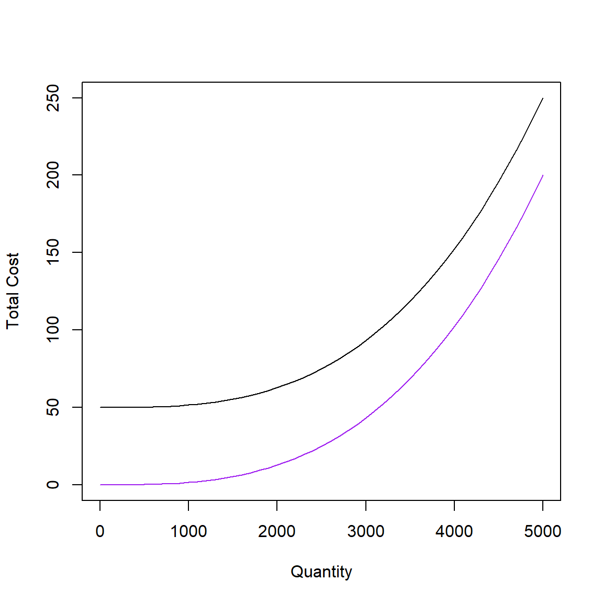

Long-Run Cost Curves
A rational firm starts out by taking a long-run view of their market. To do this, it will determine the different levels and combinations of inputs that minimize its long run costs.
Then, it must budget its fixed inputs (in our example, capital) based on (1) the quantity it expects to sell; and (2) the least-costly way to produce that quantity with its production methods.
Initial Solution
For expected sales of \(y = 2500\) units of output and inpput prices \(w = 1\) and \(w = 2\), the firm in our previous example minimized costs at 25 units of labor and 25 units of capital at a total cost of 75.
alpha = 1/3
y0 = 2500
w = 1
r = 2
costMin <- solnp(pars = c(1, 1), fun = function(x) w*x[1] + r*x[2],
ineqfun = function(x) 100*x[1]^alpha*x[2]^(1-alpha),
ineqLB = y0, ineqUB = Inf, LB = c(0, 0))##
## solnp-->The linearized problem has no feasible
## solnp-->solution. The problem may not be feasible.
##
## Iter: 1 fn: 75.0000 Pars: 24.99076 25.00462
## Iter: 2 fn: 75.0000 Pars: 24.99999 25.00001
## Iter: 3 fn: 75.0000 Pars: 25.00000 25.00000
## Iter: 4 fn: 75.0000 Pars: 25.00000 25.00000
## solnp--> Completed in 4 iterationsTo find costs over several quantities (i.e. a cost schedule), all we need to do is solve the cost-minimization problem for many different levels of output. Computationally, we can do this using a for-loop.
Run the following code to iterate the cost-minimization problem over any values of output to find the optimal levels of labor, capital, and cost for levels of output from 0 to 5,000 in increments of 100.
Click here to view the steps for writing the loop.
- Initialize a new
data.frameobject namedcostSchedulewith variablesQuantity,Labor,Capital,Total_Cost, andAverage_Cost.
Set the values ofQuantityequal to the sequence of outputs from 0 to 5,000 by increments of 100, and the other variables equal toNA. - Begin a
for(...) {...}loop starting ati = 1through the number of rows (nrow()) in costSchedule that does the following for eachi:
- Compute the solution to the cost-minimization problem for the
quantity of output in row
iofcostSchedule$Quantityand (temporarily) stores the result ascostMinTemp. - Assigns the \(i^th\) row of the
Laborvariable incostScheduleequal to the first value in thesolutionvariable in thecostMinTempobject, and assigns the \(i^th\) row ofCapitalequal to the second value ofsolution. - Assigns the last value (
tail(x, 1)) of thevaluesincostMinTempto theTotal_Costvariable, and calculates the average cost asTotal_Costdivided byQuantity.
w = 1; r = 2
costSchedule <-
data.frame(
Quantity = seq(from = 0, to = 5000, by = 100),
Labor = NA,
Capital = NA,
Total_Cost = NA,
Average_Cost = NA
)
for (i in 1:nrow(costSchedule)) {
costMinTemp <- solnp(
pars = c(1, 1),
fun = function(x) w*x[1] + r*x[2],
ineqfun = function(x) 100*x[1]^alpha*x[2]^(1-alpha),
ineqLB = costSchedule$Quantity[i],
ineqUB = Inf, LB = c(0, 0), UB = c(Inf, Inf))
costSchedule$Labor[i] <- costMinTemp$pars[1]
costSchedule$Capital[i] <- costMinTemp$pars[2]
costSchedule$Total_Cost[i] <- tail(costMinTemp$values, 1)
}
Iter: 1 fn: 0.00000001268 Pars: 0.000000008677 0.000000002003
Iter: 2 fn: 0.000000003596 Pars: 0.0000000018625 0.0000000008669
solnp--> Completed in 2 iterations
Iter: 1 fn: 3.0000 Pars: 1.00000 1.00000
Iter: 2 fn: 3.0000 Pars: 1.00000 1.00000
solnp--> Completed in 2 iterations
Iter: 1 fn: 6.0000 Pars: 2.00121 1.99940
Iter: 2 fn: 6.0000 Pars: 2.00000 2.00000
Iter: 3 fn: 6.0000 Pars: 2.00000 2.00000
Iter: 4 fn: 6.0000 Pars: 2.00000 2.00000
solnp--> Completed in 4 iterations
solnp-->The linearized problem has no feasible
solnp-->solution. The problem may not be feasible.
Iter: 1 fn: 9.0000 Pars: 3.00125 2.99937
Iter: 2 fn: 9.0000 Pars: 3.00000 3.00000
Iter: 3 fn: 9.0000 Pars: 3.00000 3.00000
Iter: 4 fn: 9.0000 Pars: 3.00000 3.00000
solnp--> Completed in 4 iterations
solnp-->The linearized problem has no feasible
solnp-->solution. The problem may not be feasible.
Iter: 1 fn: 12.0000 Pars: 3.99616 4.00192
Iter: 2 fn: 12.0000 Pars: 3.99999 4.00000
Iter: 3 fn: 12.0000 Pars: 4.00000 4.00000
Iter: 4 fn: 12.0000 Pars: 4.00000 4.00000
solnp--> Completed in 4 iterations
solnp-->The linearized problem has no feasible
solnp-->solution. The problem may not be feasible.
Iter: 1 fn: 15.0000 Pars: 5.00366 4.99817
Iter: 2 fn: 15.0000 Pars: 5.00000 5.00000
Iter: 3 fn: 15.0000 Pars: 5.00000 5.00000
Iter: 4 fn: 15.0000 Pars: 5.00000 5.00000
solnp--> Completed in 4 iterations
solnp-->The linearized problem has no feasible
solnp-->solution. The problem may not be feasible.
Iter: 1 fn: 18.0000 Pars: 5.99611 6.00194
Iter: 2 fn: 18.0000 Pars: 6.00000 6.00000
Iter: 3 fn: 18.0000 Pars: 6.00000 6.00000
Iter: 4 fn: 18.0000 Pars: 6.00000 6.00000
solnp--> Completed in 4 iterations
solnp-->The linearized problem has no feasible
solnp-->solution. The problem may not be feasible.
Iter: 1 fn: 21.0000 Pars: 7.00616 6.99692
Iter: 2 fn: 21.0000 Pars: 7.00001 6.99999
Iter: 3 fn: 21.0000 Pars: 7.00000 7.00000
Iter: 4 fn: 21.0000 Pars: 7.00000 7.00000
solnp--> Completed in 4 iterations
solnp-->The linearized problem has no feasible
solnp-->solution. The problem may not be feasible.
Iter: 1 fn: 24.0000 Pars: 7.99700 8.00150
Iter: 2 fn: 24.0000 Pars: 8.00000 8.00000
Iter: 3 fn: 24.0000 Pars: 8.00000 8.00000
Iter: 4 fn: 24.0000 Pars: 8.00000 8.00000
solnp--> Completed in 4 iterations
solnp-->The linearized problem has no feasible
solnp-->solution. The problem may not be feasible.
Iter: 1 fn: 27.0000 Pars: 8.99406 9.00297
Iter: 2 fn: 27.0000 Pars: 8.99999 9.00000
Iter: 3 fn: 27.0000 Pars: 9.00000 9.00000
Iter: 4 fn: 27.0000 Pars: 9.00000 9.00000
solnp--> Completed in 4 iterations
solnp-->The linearized problem has no feasible
solnp-->solution. The problem may not be feasible.
Iter: 1 fn: 30.0000 Pars: 10.00570 9.99715
Iter: 2 fn: 30.0000 Pars: 10.00000 10.00000
Iter: 3 fn: 30.0000 Pars: 10.00000 10.00000
Iter: 4 fn: 30.0000 Pars: 10.00000 10.00000
solnp--> Completed in 4 iterations
solnp-->The linearized problem has no feasible
solnp-->solution. The problem may not be feasible.
Iter: 1 fn: 33.0000 Pars: 11.00375 10.99812
Iter: 2 fn: 33.0000 Pars: 11.00000 11.00000
Iter: 3 fn: 33.0000 Pars: 11.00000 11.00000
Iter: 4 fn: 33.0000 Pars: 11.00000 11.00000
solnp--> Completed in 4 iterations
solnp-->The linearized problem has no feasible
solnp-->solution. The problem may not be feasible.
Iter: 1 fn: 36.0000 Pars: 12.00326 11.99837
Iter: 2 fn: 36.0000 Pars: 12.00000 12.00000
Iter: 3 fn: 36.0000 Pars: 12.00000 12.00000
Iter: 4 fn: 36.0000 Pars: 12.00000 12.00000
solnp--> Completed in 4 iterations
solnp-->The linearized problem has no feasible
solnp-->solution. The problem may not be feasible.
Iter: 1 fn: 39.0000 Pars: 12.99212 13.00394
Iter: 2 fn: 39.0000 Pars: 12.99999 13.00000
Iter: 3 fn: 39.0000 Pars: 13.00000 13.00000
Iter: 4 fn: 39.0000 Pars: 13.00000 13.00000
solnp--> Completed in 4 iterations
solnp-->The linearized problem has no feasible
solnp-->solution. The problem may not be feasible.
Iter: 1 fn: 42.0000 Pars: 14.01151 13.99424
Iter: 2 fn: 42.0000 Pars: 14.00003 13.99998
Iter: 3 fn: 42.0000 Pars: 14.00000 14.00000
Iter: 4 fn: 42.0000 Pars: 14.00000 14.00000
solnp--> Completed in 4 iterations
solnp-->The linearized problem has no feasible
solnp-->solution. The problem may not be feasible.
Iter: 1 fn: 45.0000 Pars: 14.99196 15.00402
Iter: 2 fn: 45.0000 Pars: 14.99999 15.00001
Iter: 3 fn: 45.0000 Pars: 15.00000 15.00000
Iter: 4 fn: 45.0000 Pars: 15.00000 15.00000
solnp--> Completed in 4 iterations
solnp-->The linearized problem has no feasible
solnp-->solution. The problem may not be feasible.
Iter: 1 fn: 48.0000 Pars: 15.99126 16.00437
Iter: 2 fn: 48.0000 Pars: 15.99999 16.00000
Iter: 3 fn: 48.0000 Pars: 16.00000 16.00000
Iter: 4 fn: 48.0000 Pars: 16.00000 16.00000
solnp--> Completed in 4 iterations
solnp-->The linearized problem has no feasible
solnp-->solution. The problem may not be feasible.
Iter: 1 fn: 51.0000 Pars: 16.98908 17.00546
Iter: 2 fn: 51.0000 Pars: 16.99998 17.00001
Iter: 3 fn: 51.0000 Pars: 17.00000 17.00000
Iter: 4 fn: 51.0000 Pars: 17.00000 17.00000
solnp--> Completed in 4 iterations
solnp-->The linearized problem has no feasible
solnp-->solution. The problem may not be feasible.
Iter: 1 fn: 54.0000 Pars: 18.00675 17.99663
Iter: 2 fn: 54.0000 Pars: 18.00001 18.00000
Iter: 3 fn: 54.0000 Pars: 18.00000 18.00000
Iter: 4 fn: 54.0000 Pars: 18.00000 18.00000
solnp--> Completed in 4 iterations
solnp-->The linearized problem has no feasible
solnp-->solution. The problem may not be feasible.
Iter: 1 fn: 57.0000 Pars: 19.01183 18.99409
Iter: 2 fn: 57.0000 Pars: 19.00004 18.99998
Iter: 3 fn: 57.0000 Pars: 19.00000 19.00000
Iter: 4 fn: 57.0000 Pars: 19.00000 19.00000
solnp--> Completed in 4 iterations
solnp-->The linearized problem has no feasible
solnp-->solution. The problem may not be feasible.
Iter: 1 fn: 60.0000 Pars: 20.01097 19.99452
Iter: 2 fn: 60.0000 Pars: 20.00002 19.99999
Iter: 3 fn: 60.0000 Pars: 20.00000 20.00000
Iter: 4 fn: 60.0000 Pars: 20.00000 20.00000
solnp--> Completed in 4 iterations
solnp-->The linearized problem has no feasible
solnp-->solution. The problem may not be feasible.
Iter: 1 fn: 63.0000 Pars: 21.00888 20.99556
Iter: 2 fn: 63.0000 Pars: 21.00001 20.99999
Iter: 3 fn: 63.0000 Pars: 21.00000 21.00000
Iter: 4 fn: 63.0000 Pars: 21.00000 21.00000
solnp--> Completed in 4 iterations
solnp-->The linearized problem has no feasible
solnp-->solution. The problem may not be feasible.
Iter: 1 fn: 66.0000 Pars: 21.98771 22.00615
Iter: 2 fn: 66.0000 Pars: 21.99997 22.00001
Iter: 3 fn: 66.0000 Pars: 22.00000 22.00000
Iter: 4 fn: 66.0000 Pars: 22.00000 22.00000
solnp--> Completed in 4 iterations
solnp-->The linearized problem has no feasible
solnp-->solution. The problem may not be feasible.
Iter: 1 fn: 69.0000 Pars: 23.01118 22.99441
Iter: 2 fn: 69.0000 Pars: 23.00002 22.99999
Iter: 3 fn: 69.0000 Pars: 23.00000 23.00000
Iter: 4 fn: 69.0000 Pars: 23.00000 23.00000
solnp--> Completed in 4 iterations
solnp-->The linearized problem has no feasible
solnp-->solution. The problem may not be feasible.
Iter: 1 fn: 72.0000 Pars: 24.01892 23.99054
Iter: 2 fn: 72.0000 Pars: 24.00012 23.99994
Iter: 3 fn: 72.0000 Pars: 24.00000 24.00000
Iter: 4 fn: 72.0000 Pars: 24.00000 24.00000
solnp--> Completed in 4 iterations
solnp-->The linearized problem has no feasible
solnp-->solution. The problem may not be feasible.
Iter: 1 fn: 75.0000 Pars: 24.99076 25.00462
Iter: 2 fn: 75.0000 Pars: 24.99999 25.00001
Iter: 3 fn: 75.0000 Pars: 25.00000 25.00000
Iter: 4 fn: 75.0000 Pars: 25.00000 25.00000
solnp--> Completed in 4 iterations
solnp-->The linearized problem has no feasible
solnp-->solution. The problem may not be feasible.
Iter: 1 fn: 78.0000 Pars: 25.98651 26.00675
Iter: 2 fn: 78.0000 Pars: 25.99996 26.00002
Iter: 3 fn: 78.0000 Pars: 26.00000 26.00000
Iter: 4 fn: 78.0000 Pars: 26.00000 26.00000
solnp--> Completed in 4 iterations
solnp-->The linearized problem has no feasible
solnp-->solution. The problem may not be feasible.
Iter: 1 fn: 81.0000 Pars: 26.99189 27.00406
Iter: 2 fn: 81.0000 Pars: 27.00000 27.00000
Iter: 3 fn: 81.0000 Pars: 27.00000 27.00000
Iter: 4 fn: 81.0000 Pars: 27.00000 27.00000
solnp--> Completed in 4 iterations
solnp-->The linearized problem has no feasible
solnp-->solution. The problem may not be feasible.
Iter: 1 fn: 84.0000 Pars: 28.02055 27.98973
Iter: 2 fn: 84.0000 Pars: 28.00013 27.99993
Iter: 3 fn: 84.0000 Pars: 28.00000 28.00000
Iter: 4 fn: 84.0000 Pars: 28.00000 28.00000
solnp--> Completed in 4 iterations
solnp-->The linearized problem has no feasible
solnp-->solution. The problem may not be feasible.
Iter: 1 fn: 87.0000 Pars: 29.02062 28.98969
Iter: 2 fn: 87.0000 Pars: 29.00013 28.99993
Iter: 3 fn: 87.0000 Pars: 29.00000 29.00000
Iter: 4 fn: 87.0000 Pars: 29.00000 29.00000
solnp--> Completed in 4 iterations
solnp-->The linearized problem has no feasible
solnp-->solution. The problem may not be feasible.
Iter: 1 fn: 90.0000 Pars: 29.98748 30.00626
Iter: 2 fn: 90.0000 Pars: 29.99998 30.00001
Iter: 3 fn: 90.0000 Pars: 30.00000 30.00000
Iter: 4 fn: 90.0000 Pars: 30.00000 30.00000
solnp--> Completed in 4 iterations
solnp-->The linearized problem has no feasible
solnp-->solution. The problem may not be feasible.
Iter: 1 fn: 93.0000 Pars: 30.97719 31.01140
Iter: 2 fn: 93.0000 Pars: 30.99987 31.00006
Iter: 3 fn: 93.0000 Pars: 31.00000 31.00000
Iter: 4 fn: 93.0000 Pars: 31.00000 31.00000
solnp--> Completed in 4 iterations
solnp-->The linearized problem has no feasible
solnp-->solution. The problem may not be feasible.
Iter: 1 fn: 96.0000 Pars: 32.01295 31.99352
Iter: 2 fn: 96.0000 Pars: 32.00002 31.99999
Iter: 3 fn: 96.0000 Pars: 32.00000 32.00000
Iter: 4 fn: 96.0000 Pars: 32.00000 32.00000
solnp--> Completed in 4 iterations
solnp-->The linearized problem has no feasible
solnp-->solution. The problem may not be feasible.
Iter: 1 fn: 99.0000 Pars: 33.01523 32.99239
Iter: 2 fn: 99.0000 Pars: 33.00003 32.99998
Iter: 3 fn: 99.0000 Pars: 33.00000 33.00000
Iter: 4 fn: 99.0000 Pars: 33.00001 33.00000
solnp--> Completed in 4 iterations
solnp-->The linearized problem has no feasible
solnp-->solution. The problem may not be feasible.
Iter: 1 fn: 102.0000 Pars: 34.01484 33.99258
Iter: 2 fn: 102.0000 Pars: 34.00003 33.99998
Iter: 3 fn: 102.0000 Pars: 34.00000 34.00000
Iter: 4 fn: 102.0000 Pars: 34.00000 34.00000
solnp--> Completed in 4 iterations
solnp-->The linearized problem has no feasible
solnp-->solution. The problem may not be feasible.
Iter: 1 fn: 105.0000 Pars: 34.98674 35.00663
Iter: 2 fn: 105.0000 Pars: 34.99997 35.00001
Iter: 3 fn: 105.0000 Pars: 35.00000 35.00000
Iter: 4 fn: 105.0000 Pars: 35.00000 35.00000
solnp--> Completed in 4 iterations
solnp-->The linearized problem has no feasible
solnp-->solution. The problem may not be feasible.
Iter: 1 fn: 108.0787 Pars: 36.18653 35.94608
Iter: 2 fn: 107.9995 Pars: 35.99964 35.99991
Iter: 3 fn: 108.0000 Pars: 36.00002 35.99999
Iter: 4 fn: 108.0000 Pars: 36.00000 36.00000
solnp--> Completed in 4 iterations
solnp-->The linearized problem has no feasible
solnp-->solution. The problem may not be feasible.
Iter: 1 fn: 111.0000 Pars: 36.98438 37.00781
Iter: 2 fn: 111.0000 Pars: 36.99996 37.00002
Iter: 3 fn: 111.0000 Pars: 37.00000 37.00000
Iter: 4 fn: 111.0000 Pars: 37.00000 37.00000
solnp--> Completed in 4 iterations
solnp-->The linearized problem has no feasible
solnp-->solution. The problem may not be feasible.
Iter: 1 fn: 114.0000 Pars: 37.98277 38.00862
Iter: 2 fn: 114.0000 Pars: 37.99997 38.00001
Iter: 3 fn: 114.0000 Pars: 38.00000 38.00000
Iter: 4 fn: 114.0000 Pars: 38.00000 38.00000
solnp--> Completed in 4 iterations
solnp-->The linearized problem has no feasible
solnp-->solution. The problem may not be feasible.
Iter: 1 fn: 117.0000 Pars: 38.98128 39.00936
Iter: 2 fn: 117.0000 Pars: 38.99993 39.00003
Iter: 3 fn: 117.0000 Pars: 38.99999 39.00000
Iter: 4 fn: 117.0000 Pars: 39.00000 39.00000
solnp--> Completed in 4 iterations
solnp-->The linearized problem has no feasible
solnp-->solution. The problem may not be feasible.
Iter: 1 fn: 120.0000 Pars: 40.01715 39.99143
Iter: 2 fn: 120.0000 Pars: 40.00003 39.99998
Iter: 3 fn: 120.0000 Pars: 40.00000 40.00000
Iter: 4 fn: 120.0000 Pars: 40.00000 40.00000
solnp--> Completed in 4 iterations
solnp-->The linearized problem has no feasible
solnp-->solution. The problem may not be feasible.
Iter: 1 fn: 123.0000 Pars: 41.01552 40.99224
Iter: 2 fn: 123.0000 Pars: 41.00002 40.99999
Iter: 3 fn: 123.0000 Pars: 41.00001 41.00000
Iter: 4 fn: 123.0000 Pars: 41.00000 41.00000
solnp--> Completed in 4 iterations
solnp-->The linearized problem has no feasible
solnp-->solution. The problem may not be feasible.
Iter: 1 fn: 126.0000 Pars: 42.01764 41.99118
Iter: 2 fn: 126.0000 Pars: 42.00004 41.99998
Iter: 3 fn: 126.0000 Pars: 42.00000 42.00000
Iter: 4 fn: 126.0000 Pars: 42.00000 42.00000
solnp--> Completed in 4 iterations
solnp-->The linearized problem has no feasible
solnp-->solution. The problem may not be feasible.
Iter: 1 fn: 129.0000 Pars: 43.01783 42.99109
Iter: 2 fn: 129.0000 Pars: 43.00004 42.99998
Iter: 3 fn: 129.0000 Pars: 43.00000 43.00000
Iter: 4 fn: 129.0000 Pars: 43.00000 43.00000
solnp--> Completed in 4 iterations
solnp-->The linearized problem has no feasible
solnp-->solution. The problem may not be feasible.
Iter: 1 fn: 132.0619 Pars: 44.01101 44.02544
Iter: 2 fn: 132.0000 Pars: 43.99928 44.00036
Iter: 3 fn: 132.0000 Pars: 43.99928 44.00036
solnp--> Completed in 3 iterations
solnp-->The linearized problem has no feasible
solnp-->solution. The problem may not be feasible.
Iter: 1 fn: 135.0000 Pars: 45.01641 44.99180
Iter: 2 fn: 135.0000 Pars: 45.00005 44.99997
Iter: 3 fn: 135.0000 Pars: 45.00000 45.00000
Iter: 4 fn: 135.0000 Pars: 45.00000 45.00000
solnp--> Completed in 4 iterations
solnp-->The linearized problem has no feasible
solnp-->solution. The problem may not be feasible.
Iter: 1 fn: 138.0000 Pars: 45.97861 46.01069
Iter: 2 fn: 138.0000 Pars: 45.99993 46.00003
Iter: 3 fn: 138.0000 Pars: 46.00000 46.00000
Iter: 4 fn: 138.0000 Pars: 46.00000 46.00000
solnp--> Completed in 4 iterations
solnp-->The linearized problem has no feasible
solnp-->solution. The problem may not be feasible.
Iter: 1 fn: 141.0000 Pars: 46.96981 47.01510
Iter: 2 fn: 141.0000 Pars: 46.99985 47.00007
Iter: 3 fn: 141.0000 Pars: 47.00001 47.00000
Iter: 4 fn: 141.0000 Pars: 46.99999 47.00001
solnp--> Completed in 4 iterations
solnp-->The linearized problem has no feasible
solnp-->solution. The problem may not be feasible.
Iter: 1 fn: 144.0000 Pars: 48.02556 47.98722
Iter: 2 fn: 144.0000 Pars: 48.00010 47.99995
Iter: 3 fn: 144.0000 Pars: 48.00000 48.00000
Iter: 4 fn: 144.0000 Pars: 47.99999 48.00001
solnp--> Completed in 4 iterations
solnp-->The linearized problem has no feasible
solnp-->solution. The problem may not be feasible.
Iter: 1 fn: 147.0000 Pars: 49.01947 48.99027
Iter: 2 fn: 147.0000 Pars: 49.00005 48.99997
Iter: 3 fn: 147.0000 Pars: 49.00000 49.00000
Iter: 4 fn: 147.0000 Pars: 48.99999 49.00000
solnp--> Completed in 4 iterations
solnp-->The linearized problem has no feasible
solnp-->solution. The problem may not be feasible.
Iter: 1 fn: 150.0000 Pars: 50.03148 49.98426
Iter: 2 fn: 150.0000 Pars: 50.00015 49.99992
Iter: 3 fn: 150.0000 Pars: 49.99999 50.00001
Iter: 4 fn: 150.0000 Pars: 50.00000 50.00000
solnp--> Completed in 4 iterationscostSchedule$Average_Cost <- costSchedule$Total_Cost / costSchedule$Quantityw = 1; r = 2
costSchedule <-
data.frame(
Quantity = seq(from = 0, to = 5000, by = 100),
Labor = NA,
Capital = NA,
Total_Cost = NA,
Average_Cost = NA
)
for (i in 1:nrow(costSchedule)) {
costMinTemp <- solnp(
pars = c(1, 1),
fun = function(x) w*x[1] + r*x[2],
ineqfun = function(x) 100*x[1]^alpha*x[2]^(1-alpha),
ineqLB = costSchedule$Quantity[i],
ineqUB = Inf, LB = c(0, 0), UB = c(Inf, Inf))
costSchedule$Labor[i] <- costMinTemp$pars[1]
costSchedule$Capital[i] <- costMinTemp$pars[2]
costSchedule$Total_Cost[i] <- tail(costMinTemp$values, 1)
}
costSchedule$Average_Cost <- costSchedule$Total_Cost / costSchedule$QuantityGraphical Analysis
Constant Returns to Scale
Plot total and average costs as functions of quantity. Display the
plots on the same plot area using
par(mfrow = c(nrow, ncol)).
par(mfrow = c(1, 2)) # Set the graphics window to have 1 row and two columns.par(mfrow = c(1, 2))
plot(costSchedule$Quantity, costSchedule$Total_Cost, type = 'l', ylim = c(0,150), xlab = "Quantity", ylab = "Total Cost")
plot(costSchedule$Quantity, costSchedule$Average_Cost, type = 'l', ylim = c(0,0.05), xlab = "Quantity", ylab = "Average Cost")Graphical Example with Diminishing Returns
A quick way to get an increasing cost function is to redefine the production function so that the sum of the Cobb-Douglas exponents is less than one. This creates decreasing (instead of constant) returns to scale, and therefore increasing average costs. For example, \[Q = f(L, K) = 100 L^{1/3} K^{1/3}\]
Run the following code to illustrate increasing costs.
increasingCostSchedule <-
data.frame(
Quantity = seq(0, 5000, 100),
Labor = NA,
Capital = NA,
Total_Cost = NA,
Average_Cost = NA
)
for (i in 1:nrow(costSchedule)) {
costMinTemp <- solnp(
pars = c(1, 1),
fun = function(x) w*x[1] + r*x[2],
ineqfun = function(x) 100*x[1]^(1/3)*x[2]^(1/3),
ineqLB = increasingCostSchedule$Quantity[i],
ineqUB = Inf, LB = c(0, 0), UB = c(Inf, Inf))
increasingCostSchedule$Labor[i] <- costMinTemp$pars[1]
increasingCostSchedule$Capital[i] <- costMinTemp$pars[2]
increasingCostSchedule$Total_Cost[i] <- tail(costMinTemp$values, 1)
}
Iter: 1 fn: 2.4781 Pars: 0.84815 0.81496
Iter: 2 fn: 0.000000003873 Pars: 0.0000000031317 0.0000000003709
Iter: 3 fn: 0.000000002826 Pars: 2.826e-09 4.613e-14
solnp--> Completed in 3 iterations
Iter: 1 fn: 2.9393 Pars: 1.06075 0.93925
Iter: 2 fn: 2.8745 Pars: 1.15382 0.86032
Iter: 3 fn: 2.8220 Pars: 1.28637 0.76784
Iter: 4 fn: 2.8192 Pars: 1.39927 0.70995
Iter: 5 fn: 2.8283 Pars: 1.41418 0.70708
Iter: 6 fn: 2.8284 Pars: 1.41421 0.70711
Iter: 7 fn: 2.8284 Pars: 1.41421 0.70711
solnp--> Completed in 7 iterations
solnp-->The linearized problem has no feasible
solnp-->solution. The problem may not be feasible.
Iter: 1 fn: 7.4984 Pars: 2.50161 2.49839
Iter: 2 fn: 8.4560 Pars: 2.83048 2.81278
Iter: 3 fn: 8.3333 Pars: 2.98225 2.67553
Iter: 4 fn: 7.9207 Pars: 3.51931 2.20071
Iter: 5 fn: 7.9832 Pars: 3.84190 2.07067
Iter: 6 fn: 7.9947 Pars: 3.99333 2.00066
Iter: 7 fn: 8.0000 Pars: 4.00000 2.00000
Iter: 8 fn: 8.0000 Pars: 4.00000 2.00000
Iter: 9 fn: 8.0000 Pars: 4.00000 2.00000
solnp--> Completed in 9 iterations
solnp-->The linearized problem has no feasible
solnp-->solution. The problem may not be feasible.
Iter: 1 fn: 11.9990 Pars: 4.00099 3.99901
Iter: 2 fn: 15.4250 Pars: 5.14824 5.13837
Iter: 3 fn: 15.5384 Pars: 5.24599 5.14623
Iter: 4 fn: 14.6416 Pars: 6.17946 4.23107
Iter: 5 fn: 14.6791 Pars: 6.81832 3.93041
Iter: 6 fn: 14.6665 Pars: 7.28606 3.69022
Iter: 7 fn: 14.6966 Pars: 7.34832 3.67415
Iter: 8 fn: 14.6969 Pars: 7.34847 3.67423
Iter: 9 fn: 14.6969 Pars: 7.34847 3.67423
solnp--> Completed in 9 iterations
solnp-->The linearized problem has no feasible
solnp-->solution. The problem may not be feasible.
Iter: 1 fn: 16.4992 Pars: 5.50082 5.49918
Iter: 2 fn: 23.5190 Pars: 7.84518 7.83691
Iter: 3 fn: 23.9672 Pars: 8.03072 7.96825
Iter: 4 fn: 22.7907 Pars: 9.22819 6.78125
Iter: 5 fn: 22.6446 Pars: 10.19015 6.22723
Iter: 6 fn: 22.5501 Pars: 11.09442 5.72782
Iter: 7 fn: 22.6245 Pars: 11.31205 5.65621
Iter: 8 fn: 22.6274 Pars: 11.31370 5.65686
Iter: 9 fn: 22.6274 Pars: 11.31371 5.65685
solnp--> Completed in 9 iterations
solnp-->The linearized problem has no feasible
solnp-->solution. The problem may not be feasible.
Iter: 1 fn: 20.9993 Pars: 7.00075 6.99925
Iter: 2 fn: 32.5371 Pars: 10.85087 10.84310
Iter: 3 fn: 33.5112 Pars: 11.20345 11.15388
Iter: 4 fn: 32.3319 Pars: 12.40019 9.96583
Iter: 5 fn: 31.7694 Pars: 13.70239 9.03350
Iter: 6 fn: 31.4684 Pars: 15.20427 8.13207
Iter: 7 fn: 31.6049 Pars: 15.79877 7.90308
Iter: 8 fn: 31.6228 Pars: 15.81139 7.90569
Iter: 9 fn: 31.6228 Pars: 15.81139 7.90569
Iter: 10 fn: 31.6228 Pars: 15.81139 7.90569
solnp--> Completed in 10 iterations
solnp-->The linearized problem has no feasible
solnp-->solution. The problem may not be feasible.
Iter: 1 fn: 25.4993 Pars: 8.50071 8.49929
Iter: 2 fn: 42.3485 Pars: 14.12127 14.11363
Iter: 3 fn: 44.0573 Pars: 14.71488 14.67122
Iter: 4 fn: 43.0511 Pars: 15.74277 13.65418
Iter: 5 fn: 41.3692 Pars: 18.21270 11.57823
Iter: 6 fn: 41.3178 Pars: 20.46040 10.42869
Iter: 7 fn: 41.5670 Pars: 20.78375 10.39165
Iter: 8 fn: 41.5692 Pars: 20.78461 10.39230
Iter: 9 fn: 41.5692 Pars: 20.78461 10.39230
solnp--> Completed in 9 iterations
solnp-->The linearized problem has no feasible
solnp-->solution. The problem may not be feasible.
Iter: 1 fn: 29.9993 Pars: 10.00069 9.99932
Iter: 2 fn: 52.8609 Pars: 17.62540 17.61773
Iter: 3 fn: 55.5181 Pars: 18.53307 18.49252
Iter: 4 fn: 54.6946 Pars: 19.39019 17.65221
Iter: 5 fn: 51.3141 Pars: 23.59953 13.85728
Iter: 6 fn: 52.2575 Pars: 25.83000 13.21376
Iter: 7 fn: 52.3797 Pars: 26.18936 13.09519
Iter: 8 fn: 52.3832 Pars: 26.19160 13.09580
Iter: 9 fn: 52.3832 Pars: 26.19160 13.09580
solnp--> Completed in 9 iterations
solnp-->The linearized problem has no feasible
solnp-->solution. The problem may not be feasible.
Iter: 1 fn: 34.4993 Pars: 11.50067 11.49933
Iter: 2 fn: 64.0046 Pars: 21.34003 21.33226
Iter: 3 fn: 67.8248 Pars: 22.63415 22.59532
Iter: 4 fn: 67.1470 Pars: 23.36520 21.89088
Iter: 5 fn: 62.6891 Pars: 28.51736 17.08586
Iter: 6 fn: 63.8227 Pars: 31.41243 16.20513
Iter: 7 fn: 63.9921 Pars: 31.99455 15.99879
Iter: 8 fn: 64.0000 Pars: 31.99998 16.00001
Iter: 9 fn: 64.0000 Pars: 32.00000 16.00000
solnp--> Completed in 9 iterations
solnp-->The linearized problem has no feasible
solnp-->solution. The problem may not be feasible.
Iter: 1 fn: 38.9993 Pars: 13.00066 12.99934
Iter: 2 fn: 75.7251 Pars: 25.24698 25.23906
Iter: 3 fn: 80.9217 Pars: 26.99917 26.96128
Iter: 4 fn: 80.3588 Pars: 27.64294 26.35795
Iter: 5 fn: 74.8275 Pars: 33.77227 20.52760
Iter: 6 fn: 76.1389 Pars: 37.34049 19.39923
Iter: 7 fn: 76.3535 Pars: 38.17350 19.09001
Iter: 8 fn: 76.3675 Pars: 38.18370 19.09192
Iter: 9 fn: 76.3675 Pars: 38.18376 19.09188
solnp--> Completed in 9 iterations
solnp-->The linearized problem has no feasible
solnp-->solution. The problem may not be feasible.
Iter: 1 fn: 43.4993 Pars: 14.50065 14.49935
Iter: 2 fn: 87.9784 Pars: 29.33154 29.32345
Iter: 3 fn: 94.7628 Pars: 31.61255 31.57512
Iter: 4 fn: 94.2957 Pars: 32.19675 31.04947
Iter: 5 fn: 87.6830 Pars: 39.33745 24.17279
Iter: 6 fn: 89.1629 Pars: 43.59459 22.78417
Iter: 7 fn: 89.4209 Pars: 44.70457 22.35816
Iter: 8 fn: 89.4427 Pars: 44.72120 22.36076
Iter: 9 fn: 89.4427 Pars: 44.72136 22.36068
Iter: 10 fn: 89.4427 Pars: 44.72136 22.36068
solnp--> Completed in 10 iterations
solnp-->The linearized problem has no feasible
solnp-->solution. The problem may not be feasible.
Iter: 1 fn: 47.9994 Pars: 16.00065 15.99935
Iter: 2 fn: 100.7306 Pars: 33.57898 33.57581
Iter: 3 fn: 109.3117 Pars: 36.45836 36.42665
Iter: 4 fn: 108.9297 Pars: 37.00267 35.96351
Iter: 5 fn: 101.2181 Pars: 45.18771 28.01520
Iter: 6 fn: 102.8577 Pars: 50.15474 26.35150
Iter: 7 fn: 103.1577 Pars: 51.56935 25.79419
Iter: 8 fn: 103.1891 Pars: 51.59457 25.79728
Iter: 9 fn: 103.1891 Pars: 51.59457 25.79729
Iter: 10 fn: 103.1891 Pars: 51.59457 25.79729
solnp--> Completed in 10 iterations
solnp-->The linearized problem has no feasible
solnp-->solution. The problem may not be feasible.
Iter: 1 fn: 52.4994 Pars: 17.50065 17.49935
Iter: 2 fn: 113.9431 Pars: 37.98668 37.97821
Iter: 3 fn: 124.5264 Pars: 41.53366 41.49637
Iter: 4 fn: 124.2252 Pars: 42.05247 41.08638
Iter: 5 fn: 115.4024 Pars: 51.31101 32.04568
Iter: 6 fn: 117.1923 Pars: 57.00737 30.09246
Iter: 7 fn: 117.5328 Pars: 58.75217 29.39031
Iter: 8 fn: 117.5755 Pars: 58.78775 29.39388
Iter: 9 fn: 117.5755 Pars: 58.78775 29.39388
Iter: 10 fn: 117.5755 Pars: 58.78775 29.39388
solnp--> Completed in 10 iterations
solnp-->The linearized problem has no feasible
solnp-->solution. The problem may not be feasible.
Iter: 1 fn: 56.9994 Pars: 19.00065 18.99935
Iter: 2 fn: 127.5998 Pars: 42.53553 42.53213
Iter: 3 fn: 140.3889 Pars: 46.81742 46.78572
Iter: 4 fn: 140.1673 Pars: 47.32187 46.42273
Iter: 5 fn: 130.2090 Pars: 57.68194 36.26351
Iter: 6 fn: 132.1386 Pars: 64.13247 34.00308
Iter: 7 fn: 132.5184 Pars: 66.23879 33.13982
Iter: 8 fn: 132.5745 Pars: 66.28725 33.14362
Iter: 9 fn: 132.5745 Pars: 66.28726 33.14363
Iter: 10 fn: 132.5745 Pars: 66.28726 33.14362
solnp--> Completed in 10 iterations
solnp-->The linearized problem has no feasible
solnp-->solution. The problem may not be feasible.
Iter: 1 fn: 61.4994 Pars: 20.50065 20.49936
Iter: 2 fn: 141.6700 Pars: 47.22554 47.22224
Iter: 3 fn: 156.8649 Pars: 52.30933 52.27777
Iter: 4 fn: 156.7251 Pars: 52.80811 51.95850
Iter: 5 fn: 145.6156 Pars: 64.29357 40.66104
Iter: 6 fn: 147.6731 Pars: 71.51994 38.07658
Iter: 7 fn: 148.0905 Pars: 74.01707 37.03674
Iter: 8 fn: 148.1621 Pars: 74.08102 37.04052
Iter: 9 fn: 148.1621 Pars: 74.08104 37.04052
Iter: 10 fn: 148.1621 Pars: 74.08103 37.04052
solnp--> Completed in 10 iterations
solnp-->The linearized problem has no feasible
solnp-->solution. The problem may not be feasible.
Iter: 1 fn: 65.9994 Pars: 22.00065 21.99935
Iter: 2 fn: 156.1358 Pars: 52.04776 52.04401
Iter: 3 fn: 173.9337 Pars: 57.99934 57.96716
Iter: 4 fn: 173.8794 Pars: 58.49991 57.68974
Iter: 5 fn: 161.6030 Pars: 71.13144 45.23580
Iter: 6 fn: 163.7742 Pars: 79.15607 42.30904
Iter: 7 fn: 164.2275 Pars: 82.07585 41.07581
Iter: 8 fn: 164.3167 Pars: 82.15839 41.07918
Iter: 9 fn: 164.3168 Pars: 82.15839 41.07919
Iter: 10 fn: 164.3168 Pars: 82.15838 41.07919
solnp--> Completed in 10 iterations
solnp-->The linearized problem has no feasible
solnp-->solution. The problem may not be feasible.
Iter: 1 fn: 60.4302 Pars: 20.14405 20.14309
Iter: 2 fn: 165.6878 Pars: 55.23122 55.22829
Iter: 3 fn: 191.3354 Pars: 63.79623 63.76956
Iter: 4 fn: 191.7395 Pars: 64.26019 63.73967
Iter: 5 fn: 178.4575 Pars: 77.76335 50.34708
Iter: 6 fn: 180.4017 Pars: 86.70621 46.84775
Iter: 7 fn: 180.8879 Pars: 90.37996 45.25395
Iter: 8 fn: 181.0193 Pars: 90.50964 45.25482
Iter: 9 fn: 181.0193 Pars: 90.50967 45.25483
Iter: 10 fn: 181.0193 Pars: 90.50965 45.25484
solnp--> Completed in 10 iterations
solnp-->The linearized problem has no feasible
solnp-->solution. The problem may not be feasible.
Iter: 1 fn: 60.4303 Pars: 20.14400 20.14314
Iter: 2 fn: 177.9320 Pars: 59.31239 59.30981
Iter: 3 fn: 209.3575 Pars: 69.80263 69.77744
Iter: 4 fn: 210.0561 Pars: 70.31439 69.87084
Iter: 5 fn: 195.8827 Pars: 84.67095 55.60590
Iter: 6 fn: 197.5687 Pars: 94.50633 51.53120
Iter: 7 fn: 198.0741 Pars: 98.94036 49.56687
Iter: 8 fn: 198.2522 Pars: 99.12614 49.56305
Iter: 9 fn: 198.2524 Pars: 99.12618 49.56309
Iter: 10 fn: 198.2524 Pars: 99.12619 49.56309
solnp--> Completed in 10 iterations
solnp-->The linearized problem has no feasible
solnp-->solution. The problem may not be feasible.
Iter: 1 fn: 60.4303 Pars: 20.14396 20.14318
Iter: 2 fn: 190.1753 Pars: 63.39443 63.39046
Iter: 3 fn: 227.8698 Pars: 75.97398 75.94790
Iter: 4 fn: 228.9066 Pars: 76.56223 76.17217
Iter: 5 fn: 214.0150 Pars: 91.60946 61.20276
Iter: 6 fn: 215.2522 Pars: 102.36591 56.44313
Iter: 7 fn: 215.7556 Pars: 107.72885 54.01340
Iter: 8 fn: 215.9997 Pars: 107.99992 53.99991
Iter: 9 fn: 216.0000 Pars: 108.00001 54.00000
Iter: 10 fn: 216.0000 Pars: 108.00001 54.00000
solnp--> Completed in 10 iterations
solnp-->The linearized problem has no feasible
solnp-->solution. The problem may not be feasible.
Iter: 1 fn: 60.4304 Pars: 20.14392 20.14322
Iter: 2 fn: 202.4198 Pars: 67.47538 67.47219
Iter: 3 fn: 246.8560 Pars: 82.30171 82.27716
Iter: 4 fn: 248.2815 Pars: 82.99267 82.64441
Iter: 5 fn: 232.8764 Pars: 98.53110 67.17263
Iter: 6 fn: 233.4443 Pars: 110.23441 61.60497
Iter: 7 fn: 233.9105 Pars: 116.72247 58.59402
Iter: 8 fn: 234.2472 Pars: 117.12365 58.56177
Iter: 9 fn: 234.2477 Pars: 117.12392 58.56191
Iter: 10 fn: 234.2477 Pars: 117.12391 58.56191
solnp--> Completed in 10 iterations
solnp-->The linearized problem has no feasible
solnp-->solution. The problem may not be feasible.
Iter: 1 fn: 60.4304 Pars: 20.14390 20.14325
Iter: 2 fn: 214.6642 Pars: 71.55639 71.55388
Iter: 3 fn: 266.2980 Pars: 88.78153 88.75825
Iter: 4 fn: 268.1676 Pars: 89.59998 89.28380
Iter: 5 fn: 252.4835 Pars: 105.39943 73.54204
Iter: 6 fn: 252.1422 Pars: 118.07011 67.03602
Iter: 7 fn: 252.5174 Pars: 125.89373 63.31181
Iter: 8 fn: 252.9810 Pars: 126.49067 63.24517
Iter: 9 fn: 252.9822 Pars: 126.49111 63.24555
Iter: 10 fn: 252.9822 Pars: 126.49111 63.24555
solnp--> Completed in 10 iterations
solnp-->The linearized problem has no feasible
solnp-->solution. The problem may not be feasible.
Iter: 1 fn: 60.4304 Pars: 20.14388 20.14327
Iter: 2 fn: 226.9081 Pars: 75.63785 75.63512
Iter: 3 fn: 286.1798 Pars: 95.40876 95.38550
Iter: 4 fn: 288.5526 Pars: 96.37892 96.08686
Iter: 5 fn: 272.8330 Pars: 112.19970 80.31664
Iter: 6 fn: 271.3465 Pars: 125.85228 72.74710
Iter: 7 fn: 271.5575 Pars: 135.21305 68.17221
Iter: 8 fn: 272.1885 Pars: 136.09453 68.04698
Iter: 9 fn: 272.1911 Pars: 136.09558 68.04776
Iter: 10 fn: 272.1911 Pars: 136.09558 68.04776
solnp--> Completed in 10 iterations
solnp-->The linearized problem has no feasible
solnp-->solution. The problem may not be feasible.
Iter: 1 fn: 60.4304 Pars: 20.14386 20.14329
Iter: 2 fn: 239.1523 Pars: 79.71906 79.71659
Iter: 3 fn: 306.4879 Pars: 102.17770 102.15509
Iter: 4 fn: 309.4264 Pars: 103.32345 103.05148
Iter: 5 fn: 293.9124 Pars: 118.92669 87.49286
Iter: 6 fn: 291.0601 Pars: 133.57216 78.74399
Iter: 7 fn: 291.0151 Pars: 144.65015 73.18248
Iter: 8 fn: 291.8575 Pars: 145.92921 72.96414
Iter: 9 fn: 291.8630 Pars: 145.93148 72.96575
Iter: 10 fn: 291.8630 Pars: 145.93149 72.96574
solnp--> Completed in 10 iterations
solnp-->The linearized problem has no feasible
solnp-->solution. The problem may not be feasible.
Iter: 1 fn: 60.4305 Pars: 20.14384 20.14331
Iter: 2 fn: 251.3963 Pars: 83.80044 83.79792
Iter: 3 fn: 327.2086 Pars: 109.08462 109.06200
Iter: 4 fn: 330.7774 Pars: 110.42992 110.17375
Iter: 5 fn: 315.6754 Pars: 125.61182 95.03180
Iter: 6 fn: 311.2843 Pars: 141.25787 85.01323
Iter: 7 fn: 310.8819 Pars: 154.18484 78.34853
Iter: 8 fn: 311.9763 Pars: 155.98888 77.99372
Iter: 9 fn: 311.9872 Pars: 155.99359 77.99680
Iter: 10 fn: 311.9872 Pars: 155.99359 77.99680
solnp--> Completed in 10 iterations
solnp-->The linearized problem has no feasible
solnp-->solution. The problem may not be feasible.
Iter: 1 fn: 60.4305 Pars: 20.14382 20.14332
Iter: 2 fn: 263.6400 Pars: 87.88208 87.87896
Iter: 3 fn: 348.3297 Pars: 116.12557 116.10206
Iter: 4 fn: 352.5953 Pars: 117.69455 117.45039
Iter: 5 fn: 338.0696 Pars: 132.29324 102.88819
Iter: 6 fn: 332.0157 Pars: 148.94851 91.53357
Iter: 7 fn: 331.1543 Pars: 163.80728 83.67351
Iter: 8 fn: 332.5337 Pars: 166.26767 83.13303
Iter: 9 fn: 332.5538 Pars: 166.27680 83.13848
Iter: 10 fn: 332.5538 Pars: 166.27687 83.13844
solnp--> Completed in 10 iterations
solnp-->The linearized problem has no feasible
solnp-->solution. The problem may not be feasible.
Iter: 1 fn: 60.4305 Pars: 20.14381 20.14334
Iter: 2 fn: 275.8844 Pars: 91.96302 91.96070
Iter: 3 fn: 369.8506 Pars: 123.28573 123.28244
Iter: 4 fn: 374.8817 Pars: 125.10245 124.88964
Iter: 5 fn: 361.0365 Pars: 139.01098 111.01277
Iter: 6 fn: 353.2466 Pars: 156.68612 98.28025
Iter: 7 fn: 351.8319 Pars: 173.51832 89.15681
Iter: 8 fn: 353.5191 Pars: 176.76020 88.37944
Iter: 9 fn: 353.5534 Pars: 176.77672 88.38833
Iter: 10 fn: 353.5534 Pars: 176.77672 88.38833
solnp--> Completed in 10 iterations
solnp-->The linearized problem has no feasible
solnp-->solution. The problem may not be feasible.
Iter: 1 fn: 60.4305 Pars: 20.14380 20.14335
Iter: 2 fn: 288.1285 Pars: 96.04439 96.04204
Iter: 3 fn: 391.7401 Pars: 130.58232 130.57887
Iter: 4 fn: 397.6065 Pars: 132.67140 132.46754
Iter: 5 fn: 384.4967 Pars: 145.84191 119.32740
Iter: 6 fn: 374.9594 Pars: 164.54538 105.20703
Iter: 7 fn: 372.9206 Pars: 183.34139 94.78959
Iter: 8 fn: 374.9229 Pars: 187.46115 93.73087
Iter: 9 fn: 374.9773 Pars: 187.48864 93.74435
Iter: 10 fn: 374.9773 Pars: 187.48864 93.74435
solnp--> Completed in 10 iterations
solnp-->The linearized problem has no feasible
solnp-->solution. The problem may not be feasible.
Iter: 1 fn: 60.4305 Pars: 20.14378 20.14337
Iter: 2 fn: 300.3725 Pars: 100.12575 100.12338
Iter: 3 fn: 413.9984 Pars: 138.00187 137.99829
Iter: 4 fn: 420.7714 Pars: 140.38776 140.19183
Iter: 5 fn: 408.4384 Pars: 152.78083 127.82876
Iter: 6 fn: 397.1435 Pars: 172.52557 112.30897
Iter: 7 fn: 394.4157 Pars: 193.27846 100.56861
Iter: 8 fn: 396.7360 Pars: 198.36621 99.18492
Iter: 9 fn: 396.8173 Pars: 198.40858 99.20438
Iter: 10 fn: 396.8173 Pars: 198.40868 99.20433
solnp--> Completed in 10 iterations
solnp-->The linearized problem has no feasible
solnp-->solution. The problem may not be feasible.
Iter: 1 fn: 60.4305 Pars: 20.14378 20.14337
Iter: 2 fn: 312.6165 Pars: 104.20715 104.20467
Iter: 3 fn: 436.6164 Pars: 145.54133 145.53752
Iter: 4 fn: 444.3680 Pars: 148.24900 148.05952
Iter: 5 fn: 432.7847 Pars: 159.89349 136.44559
Iter: 6 fn: 419.7753 Pars: 180.69062 119.54234
Iter: 7 fn: 416.3219 Pars: 203.36171 106.48009
Iter: 8 fn: 418.9512 Pars: 209.47094 104.74013
Iter: 9 fn: 419.0656 Pars: 209.53265 104.76648
Iter: 10 fn: 419.0656 Pars: 209.53274 104.76644
Iter: 11 fn: 419.0656 Pars: 209.53284 104.76639
solnp--> Completed in 11 iterations
solnp-->The linearized problem has no feasible
solnp-->solution. The problem may not be feasible.
Iter: 1 fn: 60.4305 Pars: 20.14377 20.14339
Iter: 2 fn: 324.8606 Pars: 108.28840 108.28609
Iter: 3 fn: 459.5854 Pars: 153.19747 153.19395
Iter: 4 fn: 468.3891 Pars: 156.25185 156.06863
Iter: 5 fn: 457.5244 Pars: 167.18048 145.17195
Iter: 6 fn: 442.8400 Pars: 189.04340 126.89832
Iter: 7 fn: 438.6341 Pars: 213.60011 112.51701
Iter: 8 fn: 441.5612 Pars: 220.77186 110.39470
Iter: 9 fn: 441.7148 Pars: 220.85703 110.42890
Iter: 10 fn: 441.7148 Pars: 220.85737 110.42874
Iter: 11 fn: 441.7148 Pars: 220.85737 110.42874
solnp--> Completed in 11 iterations
solnp-->The linearized problem has no feasible
solnp-->solution. The problem may not be feasible.
Iter: 1 fn: 60.4306 Pars: 20.14375 20.14340
Iter: 2 fn: 337.1043 Pars: 112.37009 112.36711
Iter: 3 fn: 482.8959 Pars: 160.96883 160.96355
Iter: 4 fn: 492.8258 Pars: 164.39524 164.21526
Iter: 5 fn: 482.6195 Pars: 174.67017 153.97464
Iter: 6 fn: 466.3138 Pars: 197.61661 134.34860
Iter: 7 fn: 461.3518 Pars: 224.01631 118.66774
Iter: 8 fn: 464.5604 Pars: 232.26589 116.14728
Iter: 9 fn: 464.7580 Pars: 232.37809 116.18995
Iter: 10 fn: 464.7580 Pars: 232.37889 116.18955
Iter: 11 fn: 464.7580 Pars: 232.37899 116.18951
solnp--> Completed in 11 iterations
solnp-->The linearized problem has no feasible
solnp-->solution. The problem may not be feasible.
Iter: 1 fn: 60.4305 Pars: 20.14383 20.14333
Iter: 2 fn: 349.3455 Pars: 116.45435 116.44555
Iter: 3 fn: 506.5291 Pars: 168.86428 168.83239
Iter: 4 fn: 517.6595 Pars: 172.68830 172.48559
Iter: 5 fn: 508.0875 Pars: 182.33796 162.87479
Iter: 6 fn: 490.2044 Pars: 206.36716 141.91862
Iter: 7 fn: 486.9181 Pars: 228.05002 129.43406
Iter: 8 fn: 487.3106 Pars: 242.84416 122.23324
Iter: 9 fn: 488.1855 Pars: 244.09314 122.04619
Iter: 10 fn: 488.1885 Pars: 244.09422 122.04713
Iter: 11 fn: 488.1885 Pars: 244.09424 122.04712
solnp--> Completed in 11 iterations
solnp-->The linearized problem has no feasible
solnp-->solution. The problem may not be feasible.
Iter: 1 fn: 60.4306 Pars: 20.14374 20.14341
Iter: 2 fn: 361.5929 Pars: 120.53232 120.53028
Iter: 3 fn: 530.5174 Pars: 176.84118 176.83812
Iter: 4 fn: 542.9241 Pars: 181.08803 180.91805
Iter: 5 fn: 533.9155 Pars: 190.17895 171.86828
Iter: 6 fn: 514.4887 Pars: 215.30934 149.58970
Iter: 7 fn: 510.7261 Pars: 238.24478 136.24064
Iter: 8 fn: 510.9812 Pars: 254.48506 128.24808
Iter: 9 fn: 511.9957 Pars: 255.99838 127.99866
Iter: 10 fn: 512.0000 Pars: 256.00006 127.99997
Iter: 11 fn: 512.0000 Pars: 256.00006 127.99997
solnp--> Completed in 11 iterations
solnp-->The linearized problem has no feasible
solnp-->solution. The problem may not be feasible.
Iter: 1 fn: 60.4306 Pars: 20.14374 20.14342
Iter: 2 fn: 373.8368 Pars: 124.61378 124.61151
Iter: 3 fn: 554.8114 Pars: 184.93959 184.93592
Iter: 4 fn: 568.5712 Pars: 189.63458 189.46829
Iter: 5 fn: 560.0842 Pars: 198.21317 180.93550
Iter: 6 fn: 539.1477 Pars: 224.46428 157.34169
Iter: 7 fn: 534.9183 Pars: 248.63869 143.13980
Iter: 8 fn: 535.0260 Pars: 266.29990 134.36305
Iter: 9 fn: 536.1806 Pars: 268.09074 134.04493
Iter: 10 fn: 536.1865 Pars: 268.09327 134.04663
Iter: 11 fn: 536.1865 Pars: 268.09327 134.04663
solnp--> Completed in 11 iterations
solnp-->The linearized problem has no feasible
solnp-->solution. The problem may not be feasible.
Iter: 1 fn: 60.4306 Pars: 20.14373 20.14342
Iter: 2 fn: 386.0809 Pars: 128.69504 128.69294
Iter: 3 fn: 579.4200 Pars: 193.14218 193.13891
Iter: 4 fn: 594.6088 Pars: 198.31150 198.14865
Iter: 5 fn: 586.6037 Pars: 206.41909 190.09231
Iter: 6 fn: 553.9775 Pars: 245.92767 154.02493
Iter: 7 fn: 559.3798 Pars: 269.85545 144.76217
Iter: 8 fn: 560.4089 Pars: 280.00272 140.20311
Iter: 9 fn: 560.7422 Pars: 280.37130 140.18544
Iter: 10 fn: 560.7424 Pars: 280.37120 140.18558
Iter: 11 fn: 560.7424 Pars: 280.37120 140.18558
solnp--> Completed in 11 iterations
solnp-->The linearized problem has no feasible
solnp-->solution. The problem may not be feasible.
Iter: 1 fn: 60.4306 Pars: 20.14372 20.14343
Iter: 2 fn: 398.3248 Pars: 132.77654 132.77413
Iter: 3 fn: 604.3357 Pars: 201.44807 201.44384
Iter: 4 fn: 621.0303 Pars: 207.11776 206.95626
Iter: 5 fn: 613.4568 Pars: 214.80636 199.32523
Iter: 6 fn: 578.6837 Pars: 256.07380 161.30497
Iter: 7 fn: 584.2334 Pars: 281.29308 151.47018
Iter: 8 fn: 585.2772 Pars: 292.39143 146.44288
Iter: 9 fn: 585.6618 Pars: 292.83088 146.41545
Iter: 10 fn: 585.6620 Pars: 292.83100 146.41551
Iter: 11 fn: 585.6620 Pars: 292.83100 146.41551
solnp--> Completed in 11 iterations
solnp-->The linearized problem has no feasible
solnp-->solution. The problem may not be feasible.
Iter: 1 fn: 60.4306 Pars: 20.14372 20.14344
Iter: 2 fn: 410.5690 Pars: 136.85771 136.85566
Iter: 3 fn: 629.5543 Pars: 209.85362 209.85035
Iter: 4 fn: 647.8321 Pars: 216.04940 215.89134
Iter: 5 fn: 640.6574 Pars: 223.35329 208.65206
Iter: 6 fn: 593.2912 Pars: 278.44494 157.42313
Iter: 7 fn: 609.8081 Pars: 303.95562 152.92623
Iter: 8 fn: 610.9370 Pars: 305.46824 152.73436
Iter: 9 fn: 610.9403 Pars: 305.47016 152.73505
Iter: 10 fn: 610.9403 Pars: 305.47013 152.73506
solnp--> Completed in 10 iterations
solnp-->The linearized problem has no feasible
solnp-->solution. The problem may not be feasible.
Iter: 1 fn: 60.4306 Pars: 20.14372 20.14344
Iter: 2 fn: 422.8131 Pars: 140.93906 140.93702
Iter: 3 fn: 655.0682 Pars: 218.35826 218.35496
Iter: 4 fn: 675.0071 Pars: 225.10632 224.95039
Iter: 5 fn: 668.1997 Pars: 232.05877 218.07048
Iter: 6 fn: 618.0587 Pars: 289.54191 164.25838
Iter: 7 fn: 635.3377 Pars: 316.58821 159.37476
Iter: 8 fn: 636.5680 Pars: 318.28338 159.14230
Iter: 9 fn: 636.5721 Pars: 318.28618 159.14294
Iter: 10 fn: 636.5721 Pars: 318.28627 159.14290
solnp--> Completed in 10 iterations
solnp-->The linearized problem has no feasible
solnp-->solution. The problem may not be feasible.
Iter: 1 fn: 60.4306 Pars: 20.14372 20.14344
Iter: 2 fn: 435.0572 Pars: 145.02039 145.01839
Iter: 3 fn: 680.8730 Pars: 226.95981 226.95657
Iter: 4 fn: 702.5506 Pars: 234.28642 234.13210
Iter: 5 fn: 696.0782 Pars: 240.92142 227.57841
Iter: 6 fn: 643.1704 Pars: 300.82566 171.17236
Iter: 7 fn: 661.2179 Pars: 329.39383 165.91202
Iter: 8 fn: 662.5477 Pars: 331.27370 165.63701
Iter: 9 fn: 662.5526 Pars: 331.27632 165.63816
Iter: 10 fn: 662.5526 Pars: 331.27632 165.63816
solnp--> Completed in 10 iterations
solnp-->The linearized problem has no feasible
solnp-->solution. The problem may not be feasible.
Iter: 1 fn: 60.4306 Pars: 20.14371 20.14345
Iter: 2 fn: 447.3012 Pars: 149.10176 149.09971
Iter: 3 fn: 706.9631 Pars: 235.65652 235.65327
Iter: 4 fn: 730.4582 Pars: 243.58752 243.43533
Iter: 5 fn: 724.2940 Pars: 249.93361 237.18018
Iter: 6 fn: 668.6334 Pars: 312.27375 178.17982
Iter: 7 fn: 687.4413 Pars: 342.36555 172.53787
Iter: 8 fn: 688.8715 Pars: 344.43555 172.21797
Iter: 9 fn: 688.8773 Pars: 344.43848 172.21943
Iter: 10 fn: 688.8773 Pars: 344.43868 172.21933
solnp--> Completed in 10 iterations
solnp-->The linearized problem has no feasible
solnp-->solution. The problem may not be feasible.
Iter: 1 fn: 60.4306 Pars: 20.14370 20.14346
Iter: 2 fn: 459.5452 Pars: 153.18305 153.18109
Iter: 3 fn: 733.3336 Pars: 244.44665 244.44350
Iter: 4 fn: 758.7245 Pars: 253.00858 252.85798
Iter: 5 fn: 752.8403 Pars: 259.09574 246.87229
Iter: 6 fn: 694.4412 Pars: 323.88978 185.27571
Iter: 7 fn: 714.0045 Pars: 355.50282 179.25084
Iter: 8 fn: 715.5349 Pars: 357.76712 178.88388
Iter: 9 fn: 715.5418 Pars: 357.77089 178.88543
Iter: 10 fn: 715.5418 Pars: 357.77088 178.88544
solnp--> Completed in 10 iterations
solnp-->The linearized problem has no feasible
solnp-->solution. The problem may not be feasible.
Iter: 1 fn: 60.4306 Pars: 20.14371 20.14346
Iter: 2 fn: 471.7891 Pars: 157.26451 157.26230
Iter: 3 fn: 759.9796 Pars: 253.32906 253.32525
Iter: 4 fn: 787.3449 Pars: 262.54825 262.39831
Iter: 5 fn: 781.7242 Pars: 268.39478 256.66474
Iter: 6 fn: 720.5683 Pars: 335.68203 192.44313
Iter: 7 fn: 740.9052 Pars: 368.80932 186.04794
Iter: 8 fn: 742.5337 Pars: 371.26693 185.63337
Iter: 9 fn: 742.5416 Pars: 371.27089 185.63535
Iter: 10 fn: 742.5416 Pars: 371.27078 185.63540
solnp--> Completed in 10 iterations
solnp-->The linearized problem has no feasible
solnp-->solution. The problem may not be feasible.
Iter: 1 fn: 60.4306 Pars: 20.14370 20.14346
Iter: 2 fn: 484.0333 Pars: 161.34575 161.34379
Iter: 3 fn: 786.8976 Pars: 262.30135 262.29811
Iter: 4 fn: 816.3158 Pars: 272.20402 272.05588
Iter: 5 fn: 810.9388 Pars: 277.83172 266.55354
Iter: 6 fn: 747.0734 Pars: 347.58298 199.74518
Iter: 7 fn: 768.1297 Pars: 382.26050 192.93460
Iter: 8 fn: 769.8636 Pars: 384.93140 192.46607
Iter: 9 fn: 769.8727 Pars: 384.93633 192.46819
Iter: 10 fn: 769.8727 Pars: 384.93633 192.46819
solnp--> Completed in 10 iterations
solnp-->The linearized problem has no feasible
solnp-->solution. The problem may not be feasible.
Iter: 1 fn: 60.4306 Pars: 20.14370 20.14347
Iter: 2 fn: 496.2773 Pars: 165.42716 165.42507
Iter: 3 fn: 814.0820 Pars: 271.36307 271.35945
Iter: 4 fn: 845.6319 Pars: 281.97572 281.82809
Iter: 5 fn: 840.4814 Pars: 287.40365 276.53889
Iter: 6 fn: 773.8644 Pars: 359.68545 207.08945
Iter: 7 fn: 795.6881 Pars: 395.88649 199.90080
Iter: 8 fn: 797.5208 Pars: 398.75996 199.38043
Iter: 9 fn: 797.5312 Pars: 398.76515 199.38302
Iter: 10 fn: 797.5312 Pars: 398.76557 199.38281
solnp--> Completed in 10 iterations
solnp-->The linearized problem has no feasible
solnp-->solution. The problem may not be feasible.
Iter: 1 fn: 60.4306 Pars: 20.14369 20.14347
Iter: 2 fn: 508.5213 Pars: 169.50848 169.50642
Iter: 3 fn: 841.5290 Pars: 280.51204 280.50846
Iter: 4 fn: 875.2902 Pars: 291.86073 291.71475
Iter: 5 fn: 870.3516 Pars: 297.10552 286.62303
Iter: 6 fn: 800.9433 Pars: 371.97694 214.48319
Iter: 7 fn: 823.5751 Pars: 409.68407 206.94554
Iter: 8 fn: 825.5016 Pars: 412.75026 206.37569
Iter: 9 fn: 825.5132 Pars: 412.75635 206.37841
Iter: 10 fn: 825.5132 Pars: 412.75635 206.37841
solnp--> Completed in 10 iterations
solnp-->The linearized problem has no feasible
solnp-->solution. The problem may not be feasible.
Iter: 1 fn: 60.4306 Pars: 20.14369 20.14347
Iter: 2 fn: 520.7654 Pars: 173.58980 173.58782
Iter: 3 fn: 869.2349 Pars: 289.74716 289.74385
Iter: 4 fn: 905.2857 Pars: 301.85891 301.71341
Iter: 5 fn: 900.5488 Pars: 306.93272 296.80806
Iter: 6 fn: 828.4678 Pars: 384.27876 222.09452
Iter: 7 fn: 851.7610 Pars: 423.58745 214.08678
Iter: 8 fn: 853.8018 Pars: 426.89997 213.45090
Iter: 9 fn: 853.8150 Pars: 426.90752 213.45373
Iter: 10 fn: 853.8150 Pars: 426.90752 213.45373
solnp--> Completed in 10 iterations
solnp-->The linearized problem has no feasible
solnp-->solution. The problem may not be feasible.
Iter: 1 fn: 60.4306 Pars: 20.14370 20.14347
Iter: 2 fn: 533.0095 Pars: 177.67116 177.66916
Iter: 3 fn: 897.1952 Pars: 299.06730 299.06395
Iter: 4 fn: 935.6858 Pars: 311.89759 311.89411
Iter: 5 fn: 935.9598 Pars: 311.98892 311.98543
Iter: 6 fn: 935.9598 Pars: 311.98893 311.98543
solnp--> Completed in 6 iterations
solnp-->The linearized problem has no feasible
solnp-->solution. The problem may not be feasible.
Iter: 1 fn: 60.4306 Pars: 20.14369 20.14348
Iter: 2 fn: 545.2536 Pars: 181.75246 181.75056
Iter: 3 fn: 925.4069 Pars: 308.47109 308.46789
Iter: 4 fn: 966.3453 Pars: 322.11734 322.11396
Iter: 5 fn: 961.8974 Pars: 326.96575 317.46581
Iter: 6 fn: 884.3669 Pars: 409.42595 237.47045
Iter: 7 fn: 909.0922 Pars: 451.88994 228.60111
Iter: 8 fn: 911.3473 Pars: 455.67256 227.83738
Iter: 9 fn: 911.3638 Pars: 455.68188 227.84096
Iter: 10 fn: 911.3638 Pars: 455.68193 227.84094
solnp--> Completed in 10 iterations
solnp-->The linearized problem has no feasible
solnp-->solution. The problem may not be feasible.
Iter: 1 fn: 60.4307 Pars: 20.14368 20.14348
Iter: 2 fn: 557.4976 Pars: 185.83386 185.83185
Iter: 3 fn: 953.8651 Pars: 317.95738 317.95386
Iter: 4 fn: 997.2612 Pars: 332.51582 332.37271
Iter: 5 fn: 993.0577 Pars: 337.16119 327.94827
Iter: 6 fn: 912.7660 Pars: 422.22386 245.27109
Iter: 7 fn: 938.2246 Pars: 466.27197 235.97631
Iter: 8 fn: 940.5858 Pars: 470.29179 235.14701
Iter: 9 fn: 940.6041 Pars: 470.30204 235.15101
Iter: 10 fn: 940.6041 Pars: 470.30204 235.15101
solnp--> Completed in 10 iterations
solnp-->The linearized problem has no feasible
solnp-->solution. The problem may not be feasible.
Iter: 1 fn: 60.4307 Pars: 20.14367 20.14349
Iter: 2 fn: 569.7416 Pars: 189.91518 189.91323
Iter: 3 fn: 982.5678 Pars: 327.52492 327.52145
Iter: 4 fn: 1028.5704 Pars: 342.95207 342.80916
Iter: 5 fn: 1024.5254 Pars: 347.47823 338.52361
Iter: 6 fn: 941.4864 Pars: 435.14771 253.16937
Iter: 7 fn: 967.6603 Pars: 480.79581 243.43226
Iter: 8 fn: 970.1304 Pars: 485.06378 242.53329
Iter: 9 fn: 970.1505 Pars: 485.07531 242.53759
Iter: 10 fn: 970.1505 Pars: 485.07526 242.53762
solnp--> Completed in 10 iterations
solnp-->The linearized problem has no feasible
solnp-->solution. The problem may not be feasible.
Iter: 1 fn: 60.4306 Pars: 20.14369 20.14348
Iter: 2 fn: 581.9856 Pars: 193.99661 193.99447
Iter: 3 fn: 1011.5106 Pars: 337.17277 337.16893
Iter: 4 fn: 1060.1990 Pars: 353.49501 353.35198
Iter: 5 fn: 1056.3087 Pars: 357.90829 349.20022
Iter: 6 fn: 970.5064 Pars: 448.20739 261.14949
Iter: 7 fn: 997.3983 Pars: 495.46699 250.96564
Iter: 8 fn: 999.9779 Pars: 499.98746 249.99520
Iter: 9 fn: 1000.0000 Pars: 499.99983 250.00008
Iter: 10 fn: 1000.0000 Pars: 499.99999 250.00001
solnp--> Completed in 10 iterationsincreasingCostSchedule$Average_Cost <-
increasingCostSchedule$Total_Cost /increasingCostSchedule$Quantity
par(mfrow = c(1, 2))
plot(
increasingCostSchedule$Quantity,
increasingCostSchedule$Total_Cost,
type = 'l',
ylim = c(0, 1000),
xlab = "Quantity",
ylab = "Total Cost"
)
plot(
increasingCostSchedule$Quantity,
increasingCostSchedule$Average_Cost,
type = 'l',
ylim = c(0, 0.2),
xlab = "Quantity",
ylab = "Average Cost"
)increasingCostSchedule <-
data.frame(
Quantity = seq(0, 5000, 100),
Labor = NA,
Capital = NA,
Total_Cost = NA,
Average_Cost = NA
)
for (i in 1:nrow(costSchedule)) {
costMinTemp <- solnp(
pars = c(1, 1),
fun = function(x) w*x[1] + r*x[2],
ineqfun = function(x) 100*x[1]^(1/3)*x[2]^(1/3),
ineqLB = increasingCostSchedule$Quantity[i],
ineqUB = Inf, LB = c(0, 0), UB = c(Inf, Inf))
increasingCostSchedule$Labor[i] <- costMinTemp$pars[1]
increasingCostSchedule$Capital[i] <- costMinTemp$pars[2]
increasingCostSchedule$Total_Cost[i] <- tail(costMinTemp$values, 1)
}
increasingCostSchedule$Average_Cost <-
increasingCostSchedule$Total_Cost /increasingCostSchedule$Quantity
par(mfrow = c(1, 2))
plot(
increasingCostSchedule$Quantity,
increasingCostSchedule$Total_Cost,
type = 'l',
ylim = c(0, 1000),
xlab = "Quantity",
ylab = "Total Cost"
)
plot(
increasingCostSchedule$Quantity,
increasingCostSchedule$Average_Cost,
type = 'l',
ylim = c(0, 0.2),
xlab = "Quantity",
ylab = "Average Cost"
)Graphical Example with Increasing Returns
Similarly, we can force a decreasing cost function by redefining the exponents in our Cobb-Douglas function so that their sum is greater than one. Such a technology exhibits increasing returns to scale and therefore decreasing average costs. For example, \[Q = f(L, K) = 100 L^{2/3} K^{2/3}\]
Run the following code to simulate decreasing costs.
decreasingCostSchedule <-
data.frame(
Quantity = seq(0, 5000, 100),
Labor = NA,
Capital = NA,
Total_Cost = NA,
Average_Cost = NA
)
for (i in 1:nrow(decreasingCostSchedule)) {
costMinTemp <- solnp(
pars = c(1, 1),
fun = function(x) w*x[1] + r*x[2],
ineqfun = function(x) 100*x[1]^(2/3)*x[2]^(2/3),
ineqLB = decreasingCostSchedule$Quantity[i],
ineqUB = Inf, LB = c(0, 0), UB = c(Inf, Inf))
decreasingCostSchedule$Labor[i] <- costMinTemp$pars[1]
decreasingCostSchedule$Capital[i] <- costMinTemp$pars[2]
decreasingCostSchedule$Total_Cost[i] <- tail(costMinTemp$values, 1)
}
Iter: 1 fn: 1.0000 Pars: 0.000000001028 0.500000110449
Iter: 2 fn: 0.0000001472 Pars: 2.349e-12 7.362e-08
Iter: 3 fn: 0.0000001469 Pars: 5.491e-14 7.343e-08
solnp--> Completed in 3 iterations
Iter: 1 fn: 2.9617 Pars: 1.03831 0.96169
Iter: 2 fn: 2.9121 Pars: 1.09980 0.90615
Iter: 3 fn: 2.8555 Pars: 1.19677 0.82935
Iter: 4 fn: 2.8179 Pars: 1.32633 0.74579
Iter: 5 fn: 2.8239 Pars: 1.40890 0.70751
Iter: 6 fn: 2.8284 Pars: 1.41421 0.70711
Iter: 7 fn: 2.8284 Pars: 1.41421 0.70711
Iter: 8 fn: 2.8284 Pars: 1.41421 0.70711
solnp--> Completed in 8 iterations
Iter: 1 fn: 4.7659 Pars: 2.23405 1.26595
Iter: 2 fn: 4.7591 Pars: 2.28702 1.23603
Iter: 3 fn: 4.7569 Pars: 2.33079 1.21307
Iter: 4 fn: 4.7562 Pars: 2.37100 1.19258
Iter: 5 fn: 4.7568 Pars: 2.37840 1.18921
Iter: 6 fn: 4.7568 Pars: 2.37841 1.18921
Iter: 7 fn: 4.7568 Pars: 2.37841 1.18921
solnp--> Completed in 7 iterations
Iter: 1 fn: 6.4733 Pars: 3.52665 1.47335
Iter: 2 fn: 6.4598 Pars: 3.44349 1.50814
Iter: 3 fn: 6.4561 Pars: 3.40000 1.52802
Iter: 4 fn: 6.4500 Pars: 3.33553 1.55725
Iter: 5 fn: 6.4462 Pars: 3.26048 1.59286
Iter: 6 fn: 6.4470 Pars: 3.22444 1.61128
Iter: 7 fn: 6.4474 Pars: 3.22371 1.61185
Iter: 8 fn: 6.4474 Pars: 3.22371 1.61185
Iter: 9 fn: 6.4474 Pars: 3.22371 1.61185
solnp--> Completed in 9 iterations
solnp-->The linearized problem has no feasible
solnp-->solution. The problem may not be feasible.
Iter: 1 fn: 8.1492 Pars: 4.85083 1.64918
Iter: 2 fn: 8.1052 Pars: 4.71322 1.69599
Iter: 3 fn: 8.0872 Pars: 4.63912 1.72402
Iter: 4 fn: 8.0574 Pars: 4.51982 1.76880
Iter: 5 fn: 8.0219 Pars: 4.34560 1.83816
Iter: 6 fn: 7.9950 Pars: 4.13452 1.93023
Iter: 7 fn: 7.9958 Pars: 4.00581 1.99501
Iter: 8 fn: 8.0000 Pars: 3.99999 2.00000
Iter: 9 fn: 8.0000 Pars: 4.00000 2.00000
Iter: 10 fn: 8.0000 Pars: 4.00000 2.00000
solnp--> Completed in 10 iterations
solnp-->The linearized problem has no feasible
solnp-->solution. The problem may not be feasible.
Iter: 1 fn: 9.8046 Pars: 6.19540 1.80460
Iter: 2 fn: 9.7286 Pars: 6.01321 1.85769
Iter: 3 fn: 9.6940 Pars: 5.91432 1.88985
Iter: 4 fn: 9.6365 Pars: 5.75197 1.94226
Iter: 5 fn: 9.5592 Pars: 5.50477 2.02721
Iter: 6 fn: 9.4780 Pars: 5.16765 2.15517
Iter: 7 fn: 9.4386 Pars: 4.82942 2.30458
Iter: 8 fn: 9.4549 Pars: 4.72852 2.36319
Iter: 9 fn: 9.4574 Pars: 4.72871 2.36435
Iter: 10 fn: 9.4574 Pars: 4.72871 2.36435
Iter: 11 fn: 9.4574 Pars: 4.72871 2.36435
solnp--> Completed in 11 iterations
solnp-->The linearized problem has no feasible
solnp-->solution. The problem may not be feasible.
Iter: 1 fn: 11.4502 Pars: 7.55859 1.94581
Iter: 2 fn: 10.4450 Pars: 5.49241 2.47630
Iter: 3 fn: 10.8335 Pars: 5.43678 2.69835
Iter: 4 fn: 10.8432 Pars: 5.42157 2.71079
Iter: 5 fn: 10.8432 Pars: 5.42161 2.71081
Iter: 6 fn: 10.8432 Pars: 5.42161 2.71081
solnp--> Completed in 6 iterations
solnp-->The linearized problem has no feasible
solnp-->solution. The problem may not be feasible.
Iter: 1 fn: 13.0793 Pars: 8.92844 2.07544
Iter: 2 fn: 11.6200 Pars: 6.20545 2.70726
Iter: 3 fn: 12.1554 Pars: 6.12649 3.01443
Iter: 4 fn: 12.1718 Pars: 6.08585 3.04297
Iter: 5 fn: 12.1722 Pars: 6.08609 3.04305
Iter: 6 fn: 12.1722 Pars: 6.08609 3.04305
solnp--> Completed in 6 iterations
solnp-->The linearized problem has no feasible
solnp-->solution. The problem may not be feasible.
Iter: 1 fn: 14.7027 Pars: 10.30979 2.19645
Iter: 2 fn: 12.7457 Pars: 6.90574 2.91997
Iter: 3 fn: 13.4303 Pars: 6.80914 3.31056
Iter: 4 fn: 13.4530 Pars: 6.72643 3.36330
Iter: 5 fn: 13.4543 Pars: 6.72717 3.36359
Iter: 6 fn: 13.4543 Pars: 6.72717 3.36359
solnp--> Completed in 6 iterations
solnp-->The linearized problem has no feasible
solnp-->solution. The problem may not be feasible.
Iter: 1 fn: 16.3110 Pars: 11.69168 2.30967
Iter: 2 fn: 13.8331 Pars: 7.59634 3.11836
Iter: 3 fn: 14.6666 Pars: 7.48857 3.58901
Iter: 4 fn: 14.6937 Pars: 7.34688 3.67339
Iter: 5 fn: 14.6969 Pars: 7.34847 3.67423
Iter: 6 fn: 14.6969 Pars: 7.34847 3.67423
solnp--> Completed in 6 iterations
solnp-->The linearized problem has no feasible
solnp-->solution. The problem may not be feasible.
Iter: 1 fn: 17.9248 Pars: 13.08960 2.41760
Iter: 2 fn: 14.8873 Pars: 8.27838 3.30449
Iter: 3 fn: 15.8706 Pars: 8.16664 3.85198
Iter: 4 fn: 15.8987 Pars: 7.95018 3.97427
Iter: 5 fn: 15.9054 Pars: 7.95273 3.97634
Iter: 6 fn: 15.9054 Pars: 7.95271 3.97635
Iter: 7 fn: 15.9054 Pars: 7.95271 3.97635
solnp--> Completed in 7 iterations
solnp-->The linearized problem has no feasible
solnp-->solution. The problem may not be feasible.
Iter: 1 fn: 19.5252 Pars: 14.48561 2.51979
Iter: 2 fn: 15.9155 Pars: 8.95381 3.48082
Iter: 3 fn: 17.0471 Pars: 8.84389 4.10158
Iter: 4 fn: 17.0722 Pars: 8.53914 4.26652
Iter: 5 fn: 17.0840 Pars: 8.54200 4.27100
Iter: 6 fn: 17.0840 Pars: 8.54200 4.27100
solnp--> Completed in 6 iterations
solnp-->The linearized problem has no feasible
solnp-->solution. The problem may not be feasible.
Iter: 1 fn: 21.1172 Pars: 15.88275 2.61725
Iter: 2 fn: 20.8309 Pars: 15.45565 2.68764
Iter: 3 fn: 20.6809 Pars: 15.21973 2.73060
Iter: 4 fn: 20.4277 Pars: 14.82270 2.80250
Iter: 5 fn: 20.0353 Pars: 14.18555 2.92489
Iter: 6 fn: 19.4732 Pars: 13.21025 3.13149
Iter: 7 fn: 18.7846 Pars: 11.84294 3.47085
Iter: 8 fn: 18.2042 Pars: 10.25125 3.97645
Iter: 9 fn: 18.1240 Pars: 9.19499 4.46450
Iter: 10 fn: 18.2342 Pars: 9.11754 4.55834
Iter: 11 fn: 18.2361 Pars: 9.11803 4.55901
Iter: 12 fn: 18.2361 Pars: 9.11803 4.55901
solnp--> Completed in 12 iterations
solnp-->The linearized problem has no feasible
solnp-->solution. The problem may not be feasible.
Iter: 1 fn: 22.7111 Pars: 17.28889 2.71111
Iter: 2 fn: 22.3971 Pars: 16.83144 2.78285
Iter: 3 fn: 22.2317 Pars: 16.57844 2.82663
Iter: 4 fn: 21.9522 Pars: 16.15223 2.89997
Iter: 5 fn: 21.5166 Pars: 15.46660 3.02500
Iter: 6 fn: 20.8858 Pars: 14.41238 3.23673
Iter: 7 fn: 20.0950 Pars: 12.92044 3.58726
Iter: 8 fn: 19.3839 Pars: 11.13979 4.12206
Iter: 9 fn: 19.2139 Pars: 9.82977 4.69209
Iter: 10 fn: 19.3594 Pars: 9.68086 4.83926
Iter: 11 fn: 19.3643 Pars: 9.68218 4.84107
Iter: 12 fn: 19.3643 Pars: 9.68217 4.84108
solnp--> Completed in 12 iterations
solnp-->The linearized problem has no feasible
solnp-->solution. The problem may not be feasible.
Iter: 1 fn: 24.3059 Pars: 18.70250 2.80170
Iter: 2 fn: 18.8728 Pars: 10.94760 3.96258
Iter: 3 fn: 20.4446 Pars: 10.87285 4.78586
Iter: 4 fn: 20.4334 Pars: 10.24668 5.09338
Iter: 5 fn: 20.4710 Pars: 10.23553 5.11774
Iter: 6 fn: 20.4711 Pars: 10.23555 5.11777
Iter: 7 fn: 20.4711 Pars: 10.23555 5.11777
solnp--> Completed in 7 iterations
solnp-->The linearized problem has no feasible
solnp-->solution. The problem may not be feasible.
Iter: 1 fn: 25.8934 Pars: 20.11557 2.88891
Iter: 2 fn: 19.8245 Pars: 11.60350 4.11051
Iter: 3 fn: 21.5412 Pars: 11.54831 4.99645
Iter: 4 fn: 21.5092 Pars: 10.80408 5.35254
Iter: 5 fn: 21.5580 Pars: 10.77907 5.38949
Iter: 6 fn: 21.5582 Pars: 10.77912 5.38956
Iter: 7 fn: 21.5582 Pars: 10.77912 5.38956
solnp--> Completed in 7 iterations
solnp-->The linearized problem has no feasible
solnp-->solution. The problem may not be feasible.
Iter: 1 fn: 27.4785 Pars: 21.53192 2.97330
Iter: 2 fn: 20.7626 Pars: 12.25625 4.25319
Iter: 3 fn: 22.6229 Pars: 12.22351 5.19971
Iter: 4 fn: 22.5660 Pars: 11.35882 5.60360
Iter: 5 fn: 22.6269 Pars: 11.31357 5.65668
Iter: 6 fn: 22.6274 Pars: 11.31371 5.65685
Iter: 7 fn: 22.6274 Pars: 11.31371 5.65685
solnp--> Completed in 7 iterations
solnp-->The linearized problem has no feasible
solnp-->solution. The problem may not be feasible.
Iter: 1 fn: 29.0593 Pars: 22.94929 3.05502
Iter: 2 fn: 21.6877 Pars: 12.90501 4.39135
Iter: 3 fn: 23.6911 Pars: 12.89776 5.39666
Iter: 4 fn: 23.6058 Pars: 11.91209 5.84687
Iter: 5 fn: 23.6790 Pars: 11.83971 5.91966
Iter: 6 fn: 23.6800 Pars: 11.84000 5.92000
Iter: 7 fn: 23.6800 Pars: 11.84000 5.92000
solnp--> Completed in 7 iterations
solnp-->The linearized problem has no feasible
solnp-->solution. The problem may not be feasible.
Iter: 1 fn: 30.6374 Pars: 24.36864 3.13436
Iter: 2 fn: 22.6016 Pars: 13.55111 4.52523
Iter: 3 fn: 24.7468 Pars: 13.57161 5.58761
Iter: 4 fn: 24.6301 Pars: 12.46497 6.08258
Iter: 5 fn: 24.7154 Pars: 12.35808 6.17868
Iter: 6 fn: 24.7172 Pars: 12.35860 6.17930
Iter: 7 fn: 24.7172 Pars: 12.35860 6.17930
solnp--> Completed in 7 iterations
solnp-->The linearized problem has no feasible
solnp-->solution. The problem may not be feasible.
Iter: 1 fn: 32.2143 Pars: 25.79113 3.21160
Iter: 2 fn: 23.5045 Pars: 14.19397 4.65527
Iter: 3 fn: 25.7912 Pars: 14.24464 5.77328
Iter: 4 fn: 25.6403 Pars: 13.01801 6.31115
Iter: 5 fn: 25.7371 Pars: 12.86921 6.43395
Iter: 6 fn: 25.7401 Pars: 12.87005 6.43502
Iter: 7 fn: 25.7401 Pars: 12.87005 6.43502
solnp--> Completed in 7 iterations
solnp-->The linearized problem has no feasible
solnp-->solution. The problem may not be feasible.
Iter: 1 fn: 33.7867 Pars: 27.21327 3.28673
Iter: 2 fn: 33.2917 Pars: 26.56055 3.36557
Iter: 3 fn: 33.0243 Pars: 26.19717 3.41355
Iter: 4 fn: 32.5712 Pars: 25.58259 3.49429
Iter: 5 fn: 31.8489 Pars: 24.58346 3.63270
Iter: 6 fn: 30.7568 Pars: 23.01731 3.86976
Iter: 7 fn: 29.2610 Pars: 20.71522 4.27291
Iter: 8 fn: 27.5857 Pars: 17.71110 4.93731
Iter: 9 fn: 26.4724 Pars: 14.68691 5.89272
Iter: 10 fn: 26.6069 Pars: 13.38238 6.61228
Iter: 11 fn: 26.7493 Pars: 13.37479 6.68724
Iter: 12 fn: 26.7496 Pars: 13.37481 6.68740
Iter: 13 fn: 26.7496 Pars: 13.37481 6.68740
solnp--> Completed in 13 iterations
solnp-->The linearized problem has no feasible
solnp-->solution. The problem may not be feasible.
Iter: 1 fn: 35.3609 Pars: 28.64053 3.36018
Iter: 2 fn: 25.2841 Pars: 15.47473 4.90471
Iter: 3 fn: 27.8494 Pars: 15.59034 6.12953
Iter: 4 fn: 27.6229 Pars: 14.12684 6.74802
Iter: 5 fn: 27.7395 Pars: 13.87161 6.93396
Iter: 6 fn: 27.7466 Pars: 13.87332 6.93663
Iter: 7 fn: 27.7466 Pars: 13.87329 6.93664
solnp--> Completed in 7 iterations
solnp-->The linearized problem has no feasible
solnp-->solution. The problem may not be feasible.
Iter: 1 fn: 36.9320 Pars: 30.06827 3.43184
Iter: 2 fn: 26.1611 Pars: 16.11150 5.02478
Iter: 3 fn: 28.8646 Pars: 16.26219 6.30120
Iter: 4 fn: 28.5973 Pars: 14.68284 6.95725
Iter: 5 fn: 28.7217 Pars: 14.36375 7.17895
Iter: 6 fn: 28.7317 Pars: 14.36587 7.18294
Iter: 7 fn: 28.7317 Pars: 14.36587 7.18294
solnp--> Completed in 7 iterations
solnp-->The linearized problem has no feasible
solnp-->solution. The problem may not be feasible.
Iter: 1 fn: 38.5022 Pars: 31.49831 3.50194
Iter: 2 fn: 27.0303 Pars: 16.74629 5.14202
Iter: 3 fn: 29.8713 Pars: 16.93351 6.46892
Iter: 4 fn: 29.5617 Pars: 15.24007 7.16083
Iter: 5 fn: 29.6919 Pars: 14.85042 7.42072
Iter: 6 fn: 29.7058 Pars: 14.85289 7.42644
Iter: 7 fn: 29.7058 Pars: 14.85289 7.42644
solnp--> Completed in 7 iterations
solnp-->The linearized problem has no feasible
solnp-->solution. The problem may not be feasible.
Iter: 1 fn: 40.0717 Pars: 32.93059 3.57057
Iter: 2 fn: 27.8924 Pars: 17.37924 5.25659
Iter: 3 fn: 30.8702 Pars: 17.60431 6.63295
Iter: 4 fn: 30.5168 Pars: 15.79857 7.35911
Iter: 5 fn: 30.6507 Pars: 15.33205 7.65932
Iter: 6 fn: 30.6693 Pars: 15.33464 7.66732
Iter: 7 fn: 30.6693 Pars: 15.33463 7.66732
Iter: 8 fn: 30.6693 Pars: 15.33463 7.66732
solnp--> Completed in 8 iterations
solnp-->The linearized problem has no feasible
solnp-->solution. The problem may not be feasible.
Iter: 1 fn: 41.6407 Pars: 34.36506 3.63783
Iter: 2 fn: 28.7476 Pars: 18.01018 5.36872
Iter: 3 fn: 31.8616 Pars: 18.27442 6.79360
Iter: 4 fn: 31.4632 Pars: 16.35824 7.55246
Iter: 5 fn: 31.5986 Pars: 15.80903 7.89480
Iter: 6 fn: 31.6228 Pars: 15.81139 7.90569
Iter: 7 fn: 31.6228 Pars: 15.81139 7.90569
Iter: 8 fn: 31.6228 Pars: 15.81139 7.90569
solnp--> Completed in 8 iterations
solnp-->The linearized problem has no feasible
solnp-->solution. The problem may not be feasible.
Iter: 1 fn: 43.2067 Pars: 35.79932 3.70370
Iter: 2 fn: 29.5971 Pars: 18.64013 5.47851
Iter: 3 fn: 32.8461 Pars: 18.94437 6.95089
Iter: 4 fn: 32.4014 Pars: 16.91930 7.74106
Iter: 5 fn: 32.5362 Pars: 16.28181 8.12718
Iter: 6 fn: 32.5668 Pars: 16.28340 8.14169
Iter: 7 fn: 32.5668 Pars: 16.28340 8.14170
Iter: 8 fn: 32.5668 Pars: 16.28340 8.14170
solnp--> Completed in 8 iterations
solnp-->The linearized problem has no feasible
solnp-->solution. The problem may not be feasible.
Iter: 1 fn: 44.7713 Pars: 37.23468 3.76830
Iter: 2 fn: 30.4407 Pars: 19.26840 5.58615
Iter: 3 fn: 33.8241 Pars: 19.61371 7.10518
Iter: 4 fn: 33.3321 Pars: 17.48149 7.92532
Iter: 5 fn: 33.4637 Pars: 16.75079 8.35647
Iter: 6 fn: 33.5018 Pars: 16.75089 8.37544
Iter: 7 fn: 33.5018 Pars: 16.75089 8.37544
Iter: 8 fn: 33.5018 Pars: 16.75089 8.37544
solnp--> Completed in 8 iterations
solnp-->The linearized problem has no feasible
solnp-->solution. The problem may not be feasible.
Iter: 1 fn: 46.3346 Pars: 38.67118 3.83173
Iter: 2 fn: 31.2786 Pars: 19.89503 5.69176
Iter: 3 fn: 34.7957 Pars: 20.28240 7.25665
Iter: 4 fn: 34.2557 Pars: 18.04473 8.10550
Iter: 5 fn: 34.3817 Pars: 17.21638 8.58268
Iter: 6 fn: 34.4281 Pars: 17.21407 8.60702
Iter: 7 fn: 34.4281 Pars: 17.21407 8.60703
Iter: 8 fn: 34.4281 Pars: 17.21407 8.60703
solnp--> Completed in 8 iterations
solnp-->The linearized problem has no feasible
solnp-->solution. The problem may not be feasible.
Iter: 1 fn: 47.8967 Pars: 40.10869 3.89403
Iter: 2 fn: 32.1112 Pars: 20.52035 5.79543
Iter: 3 fn: 35.7614 Pars: 20.95063 7.40541
Iter: 4 fn: 35.1727 Pars: 18.60905 8.28180
Iter: 5 fn: 35.2906 Pars: 17.67900 8.80581
Iter: 6 fn: 35.3462 Pars: 17.67312 8.83654
Iter: 7 fn: 35.3463 Pars: 17.67313 8.83657
Iter: 8 fn: 35.3463 Pars: 17.67313 8.83657
solnp--> Completed in 8 iterations
solnp-->The linearized problem has no feasible
solnp-->solution. The problem may not be feasible.
Iter: 1 fn: 49.4579 Pars: 41.54732 3.95527
Iter: 2 fn: 32.9392 Pars: 21.14469 5.89724
Iter: 3 fn: 36.7216 Pars: 21.61858 7.55153
Iter: 4 fn: 36.0833 Pars: 19.17449 8.45440
Iter: 5 fn: 36.1907 Pars: 18.13905 9.02584
Iter: 6 fn: 36.2564 Pars: 18.12824 9.06409
Iter: 7 fn: 36.2565 Pars: 18.12825 9.06413
Iter: 8 fn: 36.2565 Pars: 18.12825 9.06413
solnp--> Completed in 8 iterations
solnp-->The linearized problem has no feasible
solnp-->solution. The problem may not be feasible.
Iter: 1 fn: 51.0179 Pars: 42.98690 4.01550
Iter: 2 fn: 33.7623 Pars: 21.76765 5.99733
Iter: 3 fn: 37.6765 Pars: 22.28596 7.69526
Iter: 4 fn: 36.9880 Pars: 19.74086 8.62358
Iter: 5 fn: 37.0824 Pars: 18.59689 9.24278
Iter: 6 fn: 37.1591 Pars: 18.57957 9.28974
Iter: 7 fn: 37.1592 Pars: 18.57960 9.28980
Iter: 8 fn: 37.1592 Pars: 18.57960 9.28980
solnp--> Completed in 8 iterations
solnp-->The linearized problem has no feasible
solnp-->solution. The problem may not be feasible.
Iter: 1 fn: 52.5770 Pars: 44.42745 4.07477
Iter: 2 fn: 34.5811 Pars: 22.38957 6.09575
Iter: 3 fn: 38.6262 Pars: 22.95296 7.83664
Iter: 4 fn: 37.8871 Pars: 20.30818 8.78947
Iter: 5 fn: 37.9661 Pars: 19.05290 9.45662
Iter: 6 fn: 38.0544 Pars: 19.02726 9.51357
Iter: 7 fn: 38.0546 Pars: 19.02731 9.51366
Iter: 8 fn: 38.0546 Pars: 19.02731 9.51366
solnp--> Completed in 8 iterations
solnp-->The linearized problem has no feasible
solnp-->solution. The problem may not be feasible.
Iter: 1 fn: 54.1353 Pars: 45.86899 4.13313
Iter: 2 fn: 35.3955 Pars: 23.01030 6.19261
Iter: 3 fn: 39.5711 Pars: 23.61945 7.97584
Iter: 4 fn: 38.7809 Pars: 20.87630 8.95229
Iter: 5 fn: 38.8421 Pars: 19.50741 9.66737
Iter: 6 fn: 38.9428 Pars: 19.47146 9.73565
Iter: 7 fn: 38.9431 Pars: 19.47155 9.73577
Iter: 8 fn: 38.9431 Pars: 19.47155 9.73577
solnp--> Completed in 8 iterations
solnp-->The linearized problem has no feasible
solnp-->solution. The problem may not be feasible.
Iter: 1 fn: 55.6926 Pars: 47.31137 4.19062
Iter: 2 fn: 36.2059 Pars: 23.62999 6.28796
Iter: 3 fn: 40.5114 Pars: 24.28550 8.11294
Iter: 4 fn: 39.6696 Pars: 21.44524 9.11218
Iter: 5 fn: 39.7108 Pars: 19.96075 9.87503
Iter: 6 fn: 39.8243 Pars: 19.91229 9.95603
Iter: 7 fn: 39.8249 Pars: 19.91243 9.95621
Iter: 8 fn: 39.8249 Pars: 19.91243 9.95621
solnp--> Completed in 8 iterations
solnp-->The linearized problem has no feasible
solnp-->solution. The problem may not be feasible.
Iter: 1 fn: 57.2491 Pars: 48.75457 4.24726
Iter: 2 fn: 37.0125 Pars: 24.24873 6.38188
Iter: 3 fn: 41.4472 Pars: 24.95117 8.24803
Iter: 4 fn: 40.5535 Pars: 22.01498 9.26928
Iter: 5 fn: 40.5725 Pars: 20.41321 10.07963
Iter: 6 fn: 40.6994 Pars: 20.34988 10.17477
Iter: 7 fn: 40.7002 Pars: 20.35008 10.17504
Iter: 8 fn: 40.7002 Pars: 20.35008 10.17504
solnp--> Completed in 8 iterations
solnp-->The linearized problem has no feasible
solnp-->solution. The problem may not be feasible.
Iter: 1 fn: 58.8048 Pars: 50.19854 4.30311
Iter: 2 fn: 37.8167 Pars: 24.86818 6.47428
Iter: 3 fn: 42.3792 Pars: 25.61758 8.38080
Iter: 4 fn: 41.4330 Pars: 22.58624 9.42336
Iter: 5 fn: 41.4273 Pars: 20.86514 10.28107
Iter: 6 fn: 41.5682 Pars: 20.78432 10.39194
Iter: 7 fn: 41.5692 Pars: 20.78461 10.39230
Iter: 8 fn: 41.5692 Pars: 20.78461 10.39230
solnp--> Completed in 8 iterations
solnp-->The linearized problem has no feasible
solnp-->solution. The problem may not be feasible.
Iter: 1 fn: 60.3596 Pars: 51.64325 4.35819
Iter: 2 fn: 38.6147 Pars: 25.48343 6.56565
Iter: 3 fn: 43.3063 Pars: 26.28132 8.51250
Iter: 4 fn: 42.3079 Pars: 23.15661 9.57562
Iter: 5 fn: 42.2759 Pars: 21.31650 10.47969
Iter: 6 fn: 42.4309 Pars: 21.21573 10.60757
Iter: 7 fn: 42.4323 Pars: 21.21614 10.60807
Iter: 8 fn: 42.4323 Pars: 21.21614 10.60807
solnp--> Completed in 8 iterations
solnp-->The linearized problem has no feasible
solnp-->solution. The problem may not be feasible.
Iter: 1 fn: 61.9137 Pars: 53.08867 4.41252
Iter: 2 fn: 39.4104 Pars: 26.09914 6.65565
Iter: 3 fn: 44.2298 Pars: 26.94552 8.64214
Iter: 4 fn: 43.1786 Pars: 23.72826 9.72519
Iter: 5 fn: 43.1183 Pars: 21.76775 10.67526
Iter: 6 fn: 43.2876 Pars: 21.64420 10.82170
Iter: 7 fn: 43.2895 Pars: 21.64476 10.82238
Iter: 8 fn: 43.2895 Pars: 21.64476 10.82238
solnp--> Completed in 8 iterations
solnp-->The linearized problem has no feasible
solnp-->solution. The problem may not be feasible.
Iter: 1 fn: 63.4671 Pars: 54.53479 4.46615
Iter: 2 fn: 40.2034 Pars: 26.71464 6.74439
Iter: 3 fn: 45.1497 Pars: 27.60981 8.76993
Iter: 4 fn: 44.0455 Pars: 24.30082 9.87233
Iter: 5 fn: 43.9548 Pars: 22.21907 10.86784
Iter: 6 fn: 44.1386 Pars: 22.06982 11.03439
Iter: 7 fn: 44.1411 Pars: 22.07057 11.03528
Iter: 8 fn: 44.1411 Pars: 22.07056 11.03528
solnp--> Completed in 8 iterations
solnp-->The linearized problem has no feasible
solnp-->solution. The problem may not be feasible.
Iter: 1 fn: 65.0199 Pars: 55.98166 4.51910
Iter: 2 fn: 40.9932 Pars: 27.32921 6.83198
Iter: 3 fn: 46.0659 Pars: 28.27362 8.89614
Iter: 4 fn: 44.9085 Pars: 24.87389 10.01730
Iter: 5 fn: 44.7856 Pars: 22.67056 11.05754
Iter: 6 fn: 44.9840 Pars: 22.49268 11.24567
Iter: 7 fn: 44.9873 Pars: 22.49366 11.24683
Iter: 8 fn: 44.9873 Pars: 22.49365 11.24683
solnp--> Completed in 8 iterations
solnp-->The linearized problem has no feasible
solnp-->solution. The problem may not be feasible.
Iter: 1 fn: 66.5719 Pars: 57.42912 4.57140
Iter: 2 fn: 41.7795 Pars: 27.94252 6.91849
Iter: 3 fn: 46.9785 Pars: 28.93676 9.02087
Iter: 4 fn: 45.7678 Pars: 25.44733 10.16024
Iter: 5 fn: 45.6112 Pars: 23.12232 11.24443
Iter: 6 fn: 45.8240 Pars: 22.91286 11.45557
Iter: 7 fn: 45.8282 Pars: 22.91411 11.45705
Iter: 8 fn: 45.8282 Pars: 22.91411 11.45705
solnp--> Completed in 8 iterations
solnp-->The linearized problem has no feasible
solnp-->solution. The problem may not be feasible.
Iter: 1 fn: 68.1237 Pars: 58.87755 4.62307
Iter: 2 fn: 42.5632 Pars: 28.55537 7.00390
Iter: 3 fn: 47.8878 Pars: 29.59972 9.14404
Iter: 4 fn: 46.6236 Pars: 26.02144 10.30110
Iter: 5 fn: 46.4316 Pars: 23.57454 11.42851
Iter: 6 fn: 46.6587 Pars: 23.33043 11.66412
Iter: 7 fn: 46.6640 Pars: 23.33201 11.66600
Iter: 8 fn: 46.6640 Pars: 23.33200 11.66600
solnp--> Completed in 8 iterations
solnp-->The linearized problem has no feasible
solnp-->solution. The problem may not be feasible.
Iter: 1 fn: 69.6749 Pars: 60.32662 4.67413
Iter: 2 fn: 43.3444 Pars: 29.16796 7.08824
Iter: 3 fn: 48.7940 Pars: 30.26267 9.26566
Iter: 4 fn: 47.4761 Pars: 26.59626 10.43993
Iter: 5 fn: 47.2470 Pars: 24.02736 11.60982
Iter: 6 fn: 47.4882 Pars: 23.74547 11.87135
Iter: 7 fn: 47.4948 Pars: 23.74743 11.87370
Iter: 8 fn: 47.4948 Pars: 23.74742 11.87371
solnp--> Completed in 8 iterations
solnp-->The linearized problem has no feasible
solnp-->solution. The problem may not be feasible.
Iter: 1 fn: 71.2255 Pars: 61.77629 4.72461
Iter: 2 fn: 44.1228 Pars: 29.77958 7.17160
Iter: 3 fn: 49.6969 Pars: 30.92506 9.38593
Iter: 4 fn: 48.3253 Pars: 27.17142 10.57695
Iter: 5 fn: 48.0578 Pars: 24.48077 11.78850
Iter: 6 fn: 48.3126 Pars: 24.15805 12.07728
Iter: 7 fn: 48.3208 Pars: 24.16043 12.08020
Iter: 8 fn: 48.3208 Pars: 24.16042 12.08021
solnp--> Completed in 8 iterations
solnp-->The linearized problem has no feasible
solnp-->solution. The problem may not be feasible.
Iter: 1 fn: 72.7756 Pars: 63.22659 4.77452
Iter: 2 fn: 44.8982 Pars: 30.39014 7.25403
Iter: 3 fn: 50.5967 Pars: 31.58684 9.50494
Iter: 4 fn: 49.1714 Pars: 27.74685 10.71226
Iter: 5 fn: 48.8641 Pars: 24.93483 11.96461
Iter: 6 fn: 49.1321 Pars: 24.56824 12.28195
Iter: 7 fn: 49.1422 Pars: 24.57111 12.28553
Iter: 8 fn: 49.1422 Pars: 24.57109 12.28554
solnp--> Completed in 8 iterations
solnp-->The linearized problem has no feasible
solnp-->solution. The problem may not be feasible.
Iter: 1 fn: 74.3249 Pars: 64.67721 4.82387
Iter: 2 fn: 45.6725 Pars: 31.00170 7.33540
Iter: 3 fn: 51.4940 Pars: 32.24949 9.62228
Iter: 4 fn: 50.0146 Pars: 28.32352 10.84552
Iter: 5 fn: 49.6659 Pars: 25.38987 12.13803
Iter: 6 fn: 49.9468 Pars: 24.97610 12.48536
Iter: 7 fn: 49.9590 Pars: 24.97951 12.48973
Iter: 8 fn: 49.9590 Pars: 24.97948 12.48974
solnp--> Completed in 8 iterations
solnp-->The linearized problem has no feasible
solnp-->solution. The problem may not be feasible.
Iter: 1 fn: 75.8731 Pars: 66.12780 4.87267
Iter: 2 fn: 46.4418 Pars: 31.60959 7.41612
Iter: 3 fn: 52.3876 Pars: 32.90954 9.73904
Iter: 4 fn: 50.8546 Pars: 28.89911 10.97773
Iter: 5 fn: 50.4638 Pars: 25.84528 12.30927
Iter: 6 fn: 50.7568 Pars: 25.38170 12.68755
Iter: 7 fn: 50.7713 Pars: 25.38569 12.69281
Iter: 8 fn: 50.7713 Pars: 25.38566 12.69283
solnp--> Completed in 8 iterations
solnp-->The linearized problem has no feasible
solnp-->solution. The problem may not be feasible.
Iter: 1 fn: 77.4238 Pars: 67.58175 4.92105
Iter: 2 fn: 47.2102 Pars: 32.21865 7.49577
Iter: 3 fn: 53.2790 Pars: 33.57068 9.85416
Iter: 4 fn: 51.6919 Pars: 29.47601 11.10796
Iter: 5 fn: 51.2576 Pars: 26.30179 12.47793
Iter: 6 fn: 51.5622 Pars: 25.78510 12.88853
Iter: 7 fn: 51.5794 Pars: 25.78968 12.89484
Iter: 8 fn: 51.5794 Pars: 25.78968 12.89484
solnp--> Completed in 8 iterations
solnp-->The linearized problem has no feasible
solnp-->solution. The problem may not be feasible.
Iter: 1 fn: 78.9717 Pars: 69.03398 4.96885
Iter: 2 fn: 47.9751 Pars: 32.82563 7.57473
Iter: 3 fn: 54.1672 Pars: 34.23031 9.96844
Iter: 4 fn: 52.5264 Pars: 30.05245 11.23698
Iter: 5 fn: 52.0477 Pars: 26.75889 12.64442
Iter: 6 fn: 52.3630 Pars: 26.18638 13.08831
Iter: 7 fn: 52.3832 Pars: 26.19160 13.09580
Iter: 8 fn: 52.3832 Pars: 26.19160 13.09580
solnp--> Completed in 8 iterations
solnp-->The linearized problem has no feasible
solnp-->solution. The problem may not be feasible.
Iter: 1 fn: 80.5163 Pars: 70.48409 5.01609
Iter: 2 fn: 48.7404 Pars: 33.43500 7.65272
Iter: 3 fn: 55.0537 Pars: 34.89178 10.08094
Iter: 4 fn: 53.3586 Pars: 30.63079 11.36390
Iter: 5 fn: 52.8340 Pars: 27.21735 12.80833
Iter: 6 fn: 53.1593 Pars: 26.58557 13.28689
Iter: 7 fn: 53.1830 Pars: 26.59148 13.29574
Iter: 8 fn: 53.1830 Pars: 26.59148 13.29574
solnp--> Completed in 8 iterationsdecreasingCostSchedule$Average_Cost <-
decreasingCostSchedule$Total_Cost /decreasingCostSchedule$Quantity
par(mfrow = c(1, 2))
plot(
decreasingCostSchedule$Quantity,
decreasingCostSchedule$Total_Cost,
type = 'l',
ylim = c(0, 60),
xlab = "Quantity",
ylab = "Total Cost"
)
plot(
decreasingCostSchedule$Quantity,
decreasingCostSchedule$Average_Cost,
type = 'l',
ylim = c(0, 0.03),
xlab = "Quantity",
ylab = "Average Cost"
)decreasingCostSchedule <-
data.frame(
Quantity = seq(0, 5000, 100),
Labor = NA,
Capital = NA,
Total_Cost = NA,
Average_Cost = NA
)
for (i in 1:nrow(decreasingCostSchedule)) {
costMinTemp <- solnp(
pars = c(1, 1),
fun = function(x) w*x[1] + r*x[2],
ineqfun = function(x) 100*x[1]^(2/3)*x[2]^(2/3),
ineqLB = decreasingCostSchedule$Quantity[i],
ineqUB = Inf, LB = c(0, 0), UB = c(Inf, Inf))
decreasingCostSchedule$Labor[i] <- costMinTemp$pars[1]
decreasingCostSchedule$Capital[i] <- costMinTemp$pars[2]
decreasingCostSchedule$Total_Cost[i] <- tail(costMinTemp$values, 1)
}
decreasingCostSchedule$Average_Cost <-
decreasingCostSchedule$Total_Cost /decreasingCostSchedule$Quantity
par(mfrow = c(1, 2))
plot(
decreasingCostSchedule$Quantity,
decreasingCostSchedule$Total_Cost,
type = 'l',
ylim = c(0, 60),
xlab = "Quantity",
ylab = "Total Cost"
)
plot(
decreasingCostSchedule$Quantity,
decreasingCostSchedule$Average_Cost,
type = 'l',
ylim = c(0, 0.03),
xlab = "Quantity",
ylab = "Average Cost"
)At the end of the day the nature of costs as the firm scales up its inputs is an empirical question. Businesses seeking to optimize input and output decisions hire professional economists to estimate both sales and costs.
Short-Run Cost Curves
In our example, the firm initially anticipated sales of 2500 units. Based on this expectation it budgeted for 25 “units” of capital. Next, the firm just choose inputs (and outputs) based on its short-run costs.
Total Cost and Average Cost
With a fixed input (in the short run), a constant returns to scale technology becomes a diminishing returns to the variable input(s) technology. This introduces increasing costs, as demonstrated by the increasing slope of total cost.
Run the following code to simulate and graph the short run total and average cost curves for our example.
srCostSchedule <-
data.frame(
Quantity = seq(from = 0, to = 5000, by = 100),
Labor = NA,
Capital = 25,
Total_Cost = NA,
Average_Cost = NA
)
for (i in 1:nrow(srCostSchedule)) {
costMinTemp <- solnp(
pars = 1,
fun = function(x) w*x + r*25,
ineqfun = function(x) 100*x^(alpha)*25^(1-alpha),
ineqLB = srCostSchedule$Quantity[i],
ineqUB = Inf, LB = 0, UB = Inf)
srCostSchedule$Labor[i] <- costMinTemp$pars[1]
srCostSchedule$Total_Cost[i] <- tail(costMinTemp$values, 1)
}
Iter: 1 fn: 50.9702 Pars: 0.97016
Iter: 2 fn: 50.0000 Pars: 0.0000004452
Iter: 3 fn: 50.0000 Pars: 0.0000004413
solnp--> Completed in 3 iterations
Iter: 1 fn: 50.9702 Pars: 0.97016
Iter: 2 fn: 50.0000 Pars: 0.0000002306
Iter: 3 fn: 50.0000 Pars: 0.00001439
Iter: 4 fn: 50.0002 Pars: 0.0001792
Iter: 5 fn: 50.0008 Pars: 0.000757
Iter: 6 fn: 50.0014 Pars: 0.001401
Iter: 7 fn: 50.0016 Pars: 0.001591
Iter: 8 fn: 50.0016 Pars: 0.00160
Iter: 9 fn: 50.0016 Pars: 0.00160
solnp--> Completed in 9 iterations
Iter: 1 fn: 50.9702 Pars: 0.97016
Iter: 2 fn: 50.0000 Pars: 0.0000002944
Iter: 3 fn: 50.0000 Pars: 0.00003366
Iter: 4 fn: 50.0007 Pars: 0.0006649
Iter: 5 fn: 50.0040 Pars: 0.004017
Iter: 6 fn: 50.0097 Pars: 0.009699
Iter: 7 fn: 50.0125 Pars: 0.01252
Iter: 8 fn: 50.0128 Pars: 0.01280
Iter: 9 fn: 50.0128 Pars: 0.01280
Iter: 10 fn: 50.0128 Pars: 0.01280
solnp--> Completed in 10 iterations
Iter: 1 fn: 50.9702 Pars: 0.97017
Iter: 2 fn: 50.0000 Pars: 0.0000003757
Iter: 3 fn: 50.0001 Pars: 0.00005857
Iter: 4 fn: 50.0015 Pars: 0.001471
Iter: 5 fn: 50.0107 Pars: 0.01067
Iter: 6 fn: 50.0297 Pars: 0.02968
Iter: 7 fn: 50.0415 Pars: 0.04155
Iter: 8 fn: 50.0432 Pars: 0.04318
Iter: 9 fn: 50.0432 Pars: 0.04320
Iter: 10 fn: 50.0432 Pars: 0.04320
solnp--> Completed in 10 iterations
Iter: 1 fn: 50.9702 Pars: 0.97016
Iter: 2 fn: 50.0000 Pars: 0.0000002317
Iter: 3 fn: 50.0001 Pars: 0.0000594
Iter: 4 fn: 50.0020 Pars: 0.002019
Iter: 5 fn: 50.0184 Pars: 0.01838
Iter: 6 fn: 50.0610 Pars: 0.06099
Iter: 7 fn: 50.0955 Pars: 0.09549
Iter: 8 fn: 50.1022 Pars: 0.10224
Iter: 9 fn: 50.1024 Pars: 0.10240
Iter: 10 fn: 50.1024 Pars: 0.10240
solnp--> Completed in 10 iterations
Iter: 1 fn: 50.9702 Pars: 0.97016
Iter: 2 fn: 50.0000 Pars: 0.00000006666
Iter: 3 fn: 50.0000 Pars: 0.00004016
Iter: 4 fn: 50.0020 Pars: 0.001979
Iter: 5 fn: 50.0237 Pars: 0.02369
Iter: 6 fn: 50.0973 Pars: 0.09734
Iter: 7 fn: 50.1766 Pars: 0.17657
Iter: 8 fn: 50.1990 Pars: 0.19903
Iter: 9 fn: 50.2000 Pars: 0.20000
Iter: 10 fn: 50.2000 Pars: 0.20000
Iter: 11 fn: 50.2000 Pars: 0.20000
solnp--> Completed in 11 iterations
Iter: 1 fn: 50.9702 Pars: 0.97016
Iter: 2 fn: 50.1229 Pars: 0.12288
Iter: 3 fn: 50.2746 Pars: 0.27459
Iter: 4 fn: 50.3402 Pars: 0.34023
Iter: 5 fn: 50.3456 Pars: 0.34557
Iter: 6 fn: 50.3456 Pars: 0.34560
Iter: 7 fn: 50.3456 Pars: 0.34560
solnp--> Completed in 7 iterations
Iter: 1 fn: 50.9702 Pars: 0.97016
Iter: 2 fn: 50.4667 Pars: 0.46675
Iter: 3 fn: 50.5444 Pars: 0.54441
Iter: 4 fn: 50.5488 Pars: 0.54879
Iter: 5 fn: 50.5488 Pars: 0.54880
Iter: 6 fn: 50.5488 Pars: 0.54880
solnp--> Completed in 6 iterations
Iter: 1 fn: 50.9702 Pars: 0.97016
Iter: 2 fn: 50.8106 Pars: 0.81061
Iter: 3 fn: 50.8192 Pars: 0.81917
Iter: 4 fn: 50.8192 Pars: 0.81920
Iter: 5 fn: 50.8192 Pars: 0.81920
solnp--> Completed in 5 iterations
Iter: 1 fn: 51.1579 Pars: 1.15794
Iter: 2 fn: 51.1664 Pars: 1.16638
Iter: 3 fn: 51.1664 Pars: 1.16640
Iter: 4 fn: 51.1664 Pars: 1.16640
solnp--> Completed in 4 iterations
Iter: 1 fn: 51.5088 Pars: 1.50882
Iter: 2 fn: 51.5982 Pars: 1.59822
Iter: 3 fn: 51.6000 Pars: 1.60000
Iter: 4 fn: 51.6000 Pars: 1.60000
Iter: 5 fn: 51.6000 Pars: 1.60000
solnp--> Completed in 5 iterations
Iter: 1 fn: 51.8597 Pars: 1.85970
Iter: 2 fn: 52.1175 Pars: 2.11750
Iter: 3 fn: 52.1296 Pars: 2.12958
Iter: 4 fn: 52.1296 Pars: 2.12960
Iter: 5 fn: 52.1296 Pars: 2.12960
solnp--> Completed in 5 iterations
Iter: 1 fn: 52.2106 Pars: 2.21059
Iter: 2 fn: 52.7240 Pars: 2.72402
Iter: 3 fn: 52.7646 Pars: 2.76460
Iter: 4 fn: 52.7648 Pars: 2.76480
Iter: 5 fn: 52.7648 Pars: 2.76480
solnp--> Completed in 5 iterations
Iter: 1 fn: 52.5615 Pars: 2.56147
Iter: 2 fn: 53.4165 Pars: 3.41653
Iter: 3 fn: 53.5143 Pars: 3.51427
Iter: 4 fn: 53.5152 Pars: 3.51520
Iter: 5 fn: 53.5152 Pars: 3.51520
solnp--> Completed in 5 iterations
Iter: 1 fn: 52.9123 Pars: 2.91235
Iter: 2 fn: 54.1934 Pars: 4.19339
Iter: 3 fn: 54.3874 Pars: 4.38739
Iter: 4 fn: 54.3904 Pars: 4.39040
Iter: 5 fn: 54.3904 Pars: 4.39040
Iter: 6 fn: 54.3904 Pars: 4.39040
solnp--> Completed in 6 iterations
Iter: 1 fn: 53.2632 Pars: 3.26323
Iter: 2 fn: 55.0529 Pars: 5.05289
Iter: 3 fn: 55.3923 Pars: 5.39234
Iter: 4 fn: 55.4000 Pars: 5.40000
Iter: 5 fn: 55.4000 Pars: 5.40000
Iter: 6 fn: 55.4000 Pars: 5.40000
solnp--> Completed in 6 iterations
Iter: 1 fn: 53.6141 Pars: 3.61411
Iter: 2 fn: 55.9933 Pars: 5.99332
Iter: 3 fn: 56.5370 Pars: 6.53700
Iter: 4 fn: 56.5536 Pars: 6.55359
Iter: 5 fn: 56.5536 Pars: 6.55360
Iter: 6 fn: 56.5536 Pars: 6.55360
solnp--> Completed in 6 iterations
Iter: 1 fn: 53.9650 Pars: 3.96500
Iter: 2 fn: 57.0130 Pars: 7.01304
Iter: 3 fn: 57.8288 Pars: 7.82876
Iter: 4 fn: 57.8608 Pars: 7.86076
Iter: 5 fn: 57.8608 Pars: 7.86080
Iter: 6 fn: 57.8608 Pars: 7.86080
solnp--> Completed in 6 iterations
Iter: 1 fn: 54.3159 Pars: 4.31588
Iter: 2 fn: 58.1105 Pars: 8.11047
Iter: 3 fn: 59.2746 Pars: 9.27461
Iter: 4 fn: 59.3311 Pars: 9.33109
Iter: 5 fn: 59.3312 Pars: 9.33120
Iter: 6 fn: 59.3312 Pars: 9.33120
solnp--> Completed in 6 iterations
Iter: 1 fn: 54.6668 Pars: 4.66676
Iter: 2 fn: 59.2841 Pars: 9.28414
Iter: 3 fn: 60.8811 Pars: 10.88109
Iter: 4 fn: 60.9741 Pars: 10.97413
Iter: 5 fn: 60.9744 Pars: 10.97440
Iter: 6 fn: 60.9744 Pars: 10.97440
solnp--> Completed in 6 iterations
Iter: 1 fn: 55.0176 Pars: 5.01764
Iter: 2 fn: 60.5327 Pars: 10.53267
Iter: 3 fn: 62.6543 Pars: 12.65435
Iter: 4 fn: 62.7994 Pars: 12.79944
Iter: 5 fn: 62.8000 Pars: 12.80000
Iter: 6 fn: 62.8000 Pars: 12.80000
solnp--> Completed in 6 iterations
Iter: 1 fn: 55.3685 Pars: 5.36852
Iter: 2 fn: 61.8547 Pars: 11.85473
Iter: 3 fn: 64.6002 Pars: 14.60020
Iter: 4 fn: 64.8165 Pars: 14.81653
Iter: 5 fn: 64.8176 Pars: 14.81760
Iter: 6 fn: 64.8176 Pars: 14.81760
solnp--> Completed in 6 iterations
Iter: 1 fn: 55.7194 Pars: 5.71941
Iter: 2 fn: 63.2491 Pars: 13.24911
Iter: 3 fn: 66.7241 Pars: 16.72413
Iter: 4 fn: 67.0349 Pars: 17.03487
Iter: 5 fn: 67.0368 Pars: 17.03680
Iter: 6 fn: 67.0368 Pars: 17.03680
solnp--> Completed in 6 iterations
Iter: 1 fn: 56.0703 Pars: 6.07029
Iter: 2 fn: 64.7146 Pars: 14.71464
Iter: 3 fn: 69.0313 Pars: 19.03133
Iter: 4 fn: 69.4639 Pars: 19.46391
Iter: 5 fn: 69.4672 Pars: 19.46720
Iter: 6 fn: 69.4672 Pars: 19.46720
solnp--> Completed in 6 iterations
Iter: 1 fn: 56.4212 Pars: 6.42117
Iter: 2 fn: 66.2502 Pars: 16.25022
Iter: 3 fn: 71.5267 Pars: 21.52670
Iter: 4 fn: 72.1131 Pars: 22.11306
Iter: 5 fn: 72.1184 Pars: 22.11840
Iter: 6 fn: 72.1184 Pars: 22.11840
solnp--> Completed in 6 iterations
Iter: 1 fn: 56.7721 Pars: 6.77205
Iter: 2 fn: 67.8548 Pars: 17.85482
Iter: 3 fn: 74.2149 Pars: 24.21493
Iter: 4 fn: 74.9917 Pars: 24.99167
Iter: 5 fn: 75.0000 Pars: 25.00000
Iter: 6 fn: 75.0000 Pars: 25.00000
Iter: 7 fn: 75.0000 Pars: 25.00000
solnp--> Completed in 7 iterations
Iter: 1 fn: 57.1229 Pars: 7.12294
Iter: 2 fn: 69.5275 Pars: 19.52746
Iter: 3 fn: 77.1005 Pars: 27.10045
Iter: 4 fn: 78.1090 Pars: 28.10904
Iter: 5 fn: 78.1216 Pars: 28.12160
Iter: 6 fn: 78.1216 Pars: 28.12160
Iter: 7 fn: 78.1216 Pars: 28.12160
solnp--> Completed in 7 iterations
Iter: 1 fn: 57.4738 Pars: 7.47382
Iter: 2 fn: 71.2672 Pars: 21.26721
Iter: 3 fn: 80.1875 Pars: 30.18751
Iter: 4 fn: 81.4744 Pars: 31.47443
Iter: 5 fn: 81.4928 Pars: 31.49280
Iter: 6 fn: 81.4928 Pars: 31.49280
Iter: 7 fn: 81.4928 Pars: 31.49280
solnp--> Completed in 7 iterations
Iter: 1 fn: 57.8247 Pars: 7.82470
Iter: 2 fn: 73.0732 Pars: 23.07319
Iter: 3 fn: 83.4801 Pars: 33.48013
Iter: 4 fn: 85.0970 Pars: 35.09703
Iter: 5 fn: 85.1232 Pars: 35.12319
Iter: 6 fn: 85.1232 Pars: 35.12320
Iter: 7 fn: 85.1232 Pars: 35.12320
solnp--> Completed in 7 iterations
Iter: 1 fn: 58.1756 Pars: 8.17558
Iter: 2 fn: 74.9446 Pars: 24.94456
Iter: 3 fn: 86.9822 Pars: 36.98221
Iter: 4 fn: 88.9860 Pars: 38.98599
Iter: 5 fn: 89.0224 Pars: 39.02239
Iter: 6 fn: 89.0224 Pars: 39.02240
Iter: 7 fn: 89.0224 Pars: 39.02240
solnp--> Completed in 7 iterations
Iter: 1 fn: 58.5265 Pars: 8.52646
Iter: 2 fn: 76.8805 Pars: 26.88051
Iter: 3 fn: 90.6974 Pars: 40.69743
Iter: 4 fn: 93.1504 Pars: 43.15039
Iter: 5 fn: 93.2000 Pars: 43.19998
Iter: 6 fn: 93.2000 Pars: 43.20000
Iter: 7 fn: 93.2000 Pars: 43.20000
solnp--> Completed in 7 iterations
Iter: 1 fn: 58.8773 Pars: 8.87735
Iter: 2 fn: 78.8803 Pars: 28.88028
Iter: 3 fn: 94.6294 Pars: 44.62936
Iter: 4 fn: 97.5992 Pars: 47.59924
Iter: 5 fn: 97.6656 Pars: 47.66557
Iter: 6 fn: 97.6656 Pars: 47.66560
Iter: 7 fn: 97.6656 Pars: 47.66560
solnp--> Completed in 7 iterations
Iter: 1 fn: 59.2282 Pars: 9.22823
Iter: 2 fn: 80.9431 Pars: 30.94315
Iter: 3 fn: 98.7814 Pars: 48.78140
Iter: 4 fn: 102.3415 Pars: 52.34149
Iter: 5 fn: 102.4288 Pars: 52.42875
Iter: 6 fn: 102.4288 Pars: 52.42880
Iter: 7 fn: 102.4288 Pars: 52.42880
solnp--> Completed in 7 iterations
Iter: 1 fn: 59.5791 Pars: 9.57911
Iter: 2 fn: 83.0684 Pars: 33.06841
Iter: 3 fn: 103.1568 Pars: 53.15685
Iter: 4 fn: 107.3860 Pars: 57.38605
Iter: 5 fn: 107.4991 Pars: 57.49913
Iter: 6 fn: 107.4992 Pars: 57.49920
Iter: 7 fn: 107.4992 Pars: 57.49920
solnp--> Completed in 7 iterations
Iter: 1 fn: 59.9300 Pars: 9.92999
Iter: 2 fn: 85.2554 Pars: 35.25539
Iter: 3 fn: 107.7589 Pars: 57.75885
Iter: 4 fn: 112.7417 Pars: 62.74174
Iter: 5 fn: 112.8863 Pars: 62.88629
Iter: 6 fn: 112.8864 Pars: 62.88640
Iter: 7 fn: 112.8864 Pars: 62.88640
solnp--> Completed in 7 iterations
Iter: 1 fn: 60.2809 Pars: 10.28087
Iter: 2 fn: 87.5035 Pars: 37.50346
Iter: 3 fn: 112.5905 Pars: 62.59046
Iter: 4 fn: 118.4173 Pars: 68.41731
Iter: 5 fn: 118.5998 Pars: 68.59984
Iter: 6 fn: 118.6000 Pars: 68.60000
Iter: 7 fn: 118.6000 Pars: 68.60000
solnp--> Completed in 7 iterations
Iter: 1 fn: 60.6318 Pars: 10.63176
Iter: 2 fn: 89.8120 Pars: 39.81200
Iter: 3 fn: 117.6546 Pars: 67.65463
Iter: 4 fn: 124.4215 Pars: 74.42148
Iter: 5 fn: 124.6494 Pars: 74.64937
Iter: 6 fn: 124.6496 Pars: 74.64960
Iter: 7 fn: 124.6496 Pars: 74.64960
solnp--> Completed in 7 iterations
Iter: 1 fn: 60.9826 Pars: 10.98264
Iter: 2 fn: 92.1804 Pars: 42.18041
Iter: 3 fn: 122.9542 Pars: 72.95419
Iter: 4 fn: 130.7629 Pars: 80.76289
Iter: 5 fn: 131.0445 Pars: 81.04447
Iter: 6 fn: 131.0448 Pars: 81.04480
Iter: 7 fn: 131.0448 Pars: 81.04480
solnp--> Completed in 7 iterations
Iter: 1 fn: 61.3335 Pars: 11.33352
Iter: 2 fn: 94.6081 Pars: 44.60812
Iter: 3 fn: 128.4919 Pars: 78.49189
Iter: 4 fn: 137.4501 Pars: 87.45009
Iter: 5 fn: 137.7947 Pars: 87.79475
Iter: 6 fn: 137.7952 Pars: 87.79520
Iter: 7 fn: 137.7952 Pars: 87.79520
solnp--> Completed in 7 iterations
Iter: 1 fn: 61.6844 Pars: 11.68440
Iter: 2 fn: 97.0946 Pars: 47.09459
Iter: 3 fn: 134.2704 Pars: 84.27039
Iter: 4 fn: 144.4916 Pars: 94.49159
Iter: 5 fn: 144.9098 Pars: 94.90978
Iter: 6 fn: 144.9104 Pars: 94.91040
Iter: 7 fn: 144.9104 Pars: 94.91040
solnp--> Completed in 7 iterations
Iter: 1 fn: 62.0353 Pars: 12.03529
Iter: 2 fn: 99.6393 Pars: 49.63928
Iter: 3 fn: 140.2923 Pars: 90.29229
Iter: 4 fn: 151.8958 Pars: 101.89584
Iter: 5 fn: 152.3992 Pars: 102.39917
Iter: 6 fn: 152.4000 Pars: 102.40000
Iter: 7 fn: 152.4000 Pars: 102.40000
solnp--> Completed in 7 iterations
Iter: 1 fn: 62.3862 Pars: 12.38617
Iter: 2 fn: 102.2417 Pars: 52.24168
Iter: 3 fn: 146.5601 Pars: 96.56007
Iter: 4 fn: 159.6712 Pars: 109.67122
Iter: 5 fn: 160.2725 Pars: 110.27250
Iter: 6 fn: 160.2736 Pars: 110.27360
Iter: 7 fn: 160.2736 Pars: 110.27360
solnp--> Completed in 7 iterations
Iter: 1 fn: 62.7370 Pars: 12.73705
Iter: 2 fn: 104.9013 Pars: 54.90129
Iter: 3 fn: 153.0761 Pars: 103.07614
Iter: 4 fn: 167.8261 Pars: 117.82606
Iter: 5 fn: 168.5394 Pars: 118.53936
Iter: 6 fn: 168.5408 Pars: 118.54080
Iter: 7 fn: 168.5408 Pars: 118.54080
solnp--> Completed in 7 iterations
Iter: 1 fn: 63.0879 Pars: 13.08793
Iter: 2 fn: 107.6176 Pars: 57.61765
Iter: 3 fn: 159.8429 Pars: 109.84288
Iter: 4 fn: 176.3686 Pars: 126.36860
Iter: 5 fn: 177.2093 Pars: 127.20933
Iter: 6 fn: 177.2112 Pars: 127.21120
Iter: 7 fn: 177.2112 Pars: 127.21120
solnp--> Completed in 7 iterations
Iter: 1 fn: 63.4388 Pars: 13.43881
Iter: 2 fn: 110.3903 Pars: 60.39028
Iter: 3 fn: 166.8626 Pars: 116.86258
Iter: 4 fn: 185.3070 Pars: 135.30703
Iter: 5 fn: 186.2920 Pars: 136.29201
Iter: 6 fn: 186.2944 Pars: 136.29440
Iter: 7 fn: 186.2944 Pars: 136.29440
solnp--> Completed in 7 iterations
Iter: 1 fn: 63.7897 Pars: 13.78970
Iter: 2 fn: 113.2187 Pars: 63.21874
Iter: 3 fn: 174.1375 Pars: 124.13746
Iter: 4 fn: 194.6495 Pars: 144.64948
Iter: 5 fn: 195.7970 Pars: 145.79696
Iter: 6 fn: 195.8000 Pars: 145.80000
Iter: 7 fn: 195.8000 Pars: 145.80000
solnp--> Completed in 7 iterations
Iter: 1 fn: 64.1406 Pars: 14.14058
Iter: 2 fn: 116.1026 Pars: 66.10258
Iter: 3 fn: 181.6697 Pars: 131.66971
Iter: 4 fn: 204.4040 Pars: 154.40405
Iter: 5 fn: 205.7338 Pars: 155.73378
Iter: 6 fn: 205.7376 Pars: 155.73760
Iter: 7 fn: 205.7376 Pars: 155.73760
solnp--> Completed in 7 iterations
Iter: 1 fn: 64.4915 Pars: 14.49146
Iter: 2 fn: 119.0414 Pars: 69.04141
Iter: 3 fn: 189.4615 Pars: 139.46146
Iter: 4 fn: 214.5787 Pars: 164.57874
Iter: 5 fn: 216.1120 Pars: 166.11203
Iter: 6 fn: 216.1168 Pars: 166.11680
Iter: 7 fn: 216.1168 Pars: 166.11680
solnp--> Completed in 7 iterations
Iter: 1 fn: 64.8423 Pars: 14.84234
Iter: 2 fn: 122.0348 Pars: 72.03479
Iter: 3 fn: 197.5147 Pars: 147.51469
Iter: 4 fn: 225.1815 Pars: 175.18152
Iter: 5 fn: 226.9413 Pars: 176.94130
Iter: 6 fn: 226.9472 Pars: 176.94720
Iter: 7 fn: 226.9472 Pars: 176.94720
solnp--> Completed in 7 iterations
Iter: 1 fn: 65.1932 Pars: 15.19322
Iter: 2 fn: 125.0823 Pars: 75.08234
Iter: 3 fn: 205.8314 Pars: 155.83140
Iter: 4 fn: 236.2203 Pars: 186.22027
Iter: 5 fn: 238.2312 Pars: 188.23116
Iter: 6 fn: 238.2384 Pars: 188.23840
Iter: 7 fn: 238.2384 Pars: 188.23840
solnp--> Completed in 7 iterations
Iter: 1 fn: 65.5441 Pars: 15.54411
Iter: 2 fn: 128.1837 Pars: 78.18367
Iter: 3 fn: 214.4137 Pars: 164.41366
Iter: 4 fn: 247.7028 Pars: 197.70279
Iter: 5 fn: 249.9912 Pars: 199.99116
Iter: 6 fn: 250.0000 Pars: 200.00000
Iter: 7 fn: 250.0000 Pars: 200.00000
solnp--> Completed in 7 iterationssrCostSchedule$Average_Cost <-
srCostSchedule$Total_Cost / srCostSchedule$Quantity
par(mfrow = c(1, 2))
plot(
srCostSchedule$Quantity,
srCostSchedule$Total_Cost,
type = 'l',
ylim = c(0, 250),
xlab = "Quantity",
ylab = "Total Cost"
)
plot(
srCostSchedule$Quantity,
srCostSchedule$Average_Cost,
type = 'l',
ylim = c(0, 0.05),
xlab = "Quantity",
ylab = "Average Total Cost"
)srCostSchedule <-
data.frame(
Quantity = seq(from = 0, to = 5000, by = 100),
Labor = NA,
Capital = 25,
Total_Cost = NA,
Average_Cost = NA
)
for (i in 1:nrow(srCostSchedule)) {
costMinTemp <- solnp(
pars = 1,
fun = function(x) w*x + r*25,
ineqfun = function(x) 100*x^(alpha)*25^(1-alpha),
ineqLB = srCostSchedule$Quantity[i],
ineqUB = Inf, LB = 0, UB = Inf)
srCostSchedule$Labor[i] <- costMinTemp$pars[1]
srCostSchedule$Total_Cost[i] <- tail(costMinTemp$values, 1)
}
srCostSchedule$Average_Cost <-
srCostSchedule$Total_Cost / srCostSchedule$Quantity
par(mfrow = c(1, 2))
plot(
srCostSchedule$Quantity,
srCostSchedule$Total_Cost,
type = 'l',
ylim = c(0, 250),
xlab = "Quantity",
ylab = "Total Cost"
)
plot(
srCostSchedule$Quantity,
srCostSchedule$Average_Cost,
type = 'l',
ylim = c(0, 0.05),
xlab = "Quantity",
ylab = "Average Total Cost"
)Variable Costs
Variable costs are costs associated with variable inputs (in our example labor). They are costs (and input decisions) that the firm can directly control in the short run.
Run the following code to simulate and graph total and average variable costs for our example.
srCostSchedule$Variable_Cost <- w * srCostSchedule$Labor
srCostSchedule$Average_Variable_Cost <-
srCostSchedule$Variable_Cost / srCostSchedule$Quantity
plot(
srCostSchedule$Quantity,
srCostSchedule$Total_Cost,
type = 'l',
ylim = c(0, 250),
xlab = "Quantity",
ylab = "Total Cost"
)
lines(
srCostSchedule$Quantity,
srCostSchedule$Variable_Cost,
col = 'purple'
)
plot(
srCostSchedule$Quantity,
srCostSchedule$Average_Cost,
type = 'l',
ylim = c(0, 0.05),
xlab = "Quantity",
ylab = "Average Cost"
)
lines(
srCostSchedule$Quantity,
srCostSchedule$Average_Variable_Cost,
col = 'purple'
)srCostSchedule$Variable_Cost <- w * srCostSchedule$Labor
srCostSchedule$Average_Variable_Cost <-
srCostSchedule$Variable_Cost / srCostSchedule$Quantity
plot(
srCostSchedule$Quantity,
srCostSchedule$Total_Cost,
type = 'l',
ylim = c(0, 250),
xlab = "Quantity",
ylab = "Total Cost"
)
lines(
srCostSchedule$Quantity,
srCostSchedule$Variable_Cost,
type = 'l',
col = 'purple'
)
plot(
srCostSchedule$Quantity,
srCostSchedule$Average_Cost,
type = 'l',
ylim = c(0, 0.05),
xlab = "Quantity",
ylab = "Average Cost"
)
lines(srCostSchedule$Quantity,
srCostSchedule$Average_Variable_Cost,
col = 'purple')Marginal Costs
Marginal cost measures the rate at which total (or total vairable) cost changes as the firm increases its output by very small amounts. In our numerical simulation, we really only approximate the instantaneous value of the change because our code requires discrete changes (and because we’re not deriving the full cost function symbolically).
To partially compensate for this, we will average the change between the current cost and the previous cost with the change between the current cost and the next cost.
By definition, the derivative of the cost function takes a similar approach, but takes the limit as \(\Delta Q \to 0\).
Run the following code to add marginal cost to the cost schedule and to the graphs.
# Find TC(Q_{i+1}) - TC(Q_{i-1}) / (2 * dQ)
srCostSchedule$Marginal_Cost <-
c(NA,diff(srCostSchedule$Total_Cost, lag = 2)/200, NA)
plot(
srCostSchedule$Quantity,
srCostSchedule$Total_Cost,
type = 'l',
ylim = c(0, 250),
xlab = "Quantity",
ylab = "Total Cost"
)
lines(
srCostSchedule$Quantity,
srCostSchedule$Variable_Cost,
type = 'l',
col = 'purple'
)
plot(
srCostSchedule$Quantity,
srCostSchedule$Average_Cost,
type = 'l',
ylim = c(0, 0.05),
xlab = "Quantity",
ylab = "Average/Marginal Cost"
)
lines(srCostSchedule$Quantity,
srCostSchedule$Average_Variable_Cost,
col = 'purple')
lines(srCostSchedule$Quantity,
srCostSchedule$Marginal_Cost,
col = 'red')srCostSchedule$Marginal_Cost <-
c(NA,diff(srCostSchedule$Total_Cost, lag = 2)/200, NA)
plot(
srCostSchedule$Quantity,
srCostSchedule$Total_Cost,
type = 'l',
ylim = c(0, 250),
xlab = "Quantity",
ylab = "Total Cost"
)
lines(
srCostSchedule$Quantity,
srCostSchedule$Variable_Cost,
type = 'l',
col = 'purple'
)
plot(
srCostSchedule$Quantity,
srCostSchedule$Average_Cost,
type = 'l',
ylim = c(0, 0.05),
xlab = "Quantity",
ylab = "Average/Marginal Cost"
)
lines(srCostSchedule$Quantity,
srCostSchedule$Average_Variable_Cost,
col = 'purple')
lines(srCostSchedule$Quantity,
srCostSchedule$Marginal_Cost,
col = 'red')